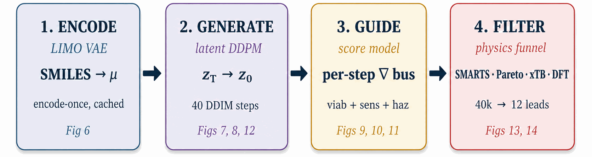
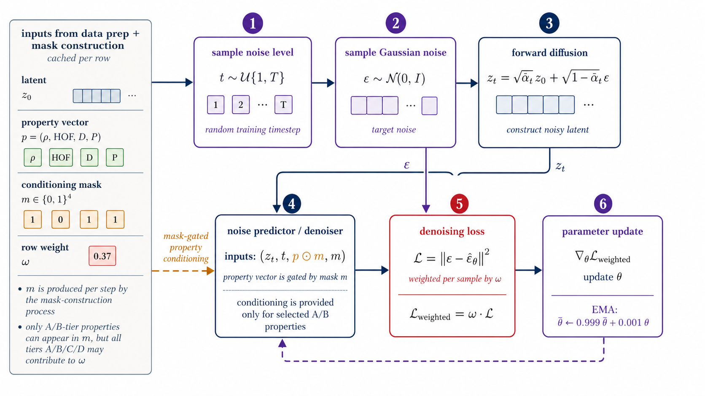
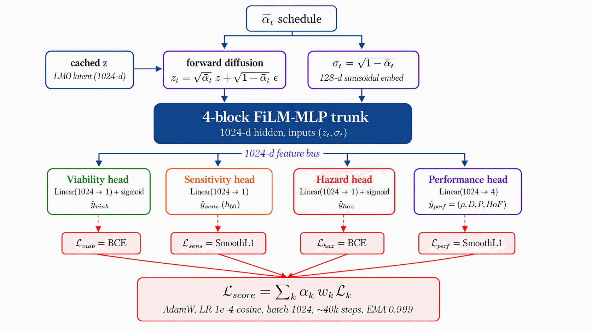
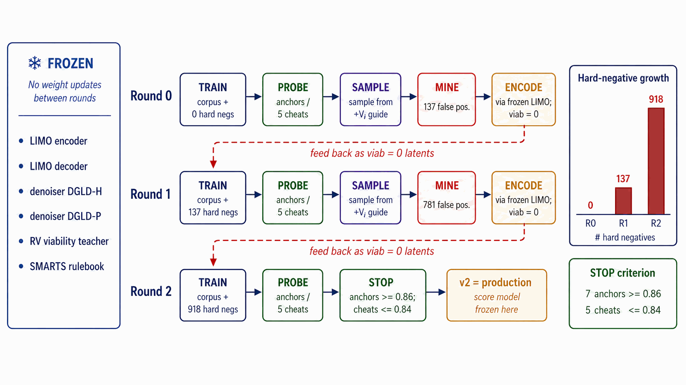
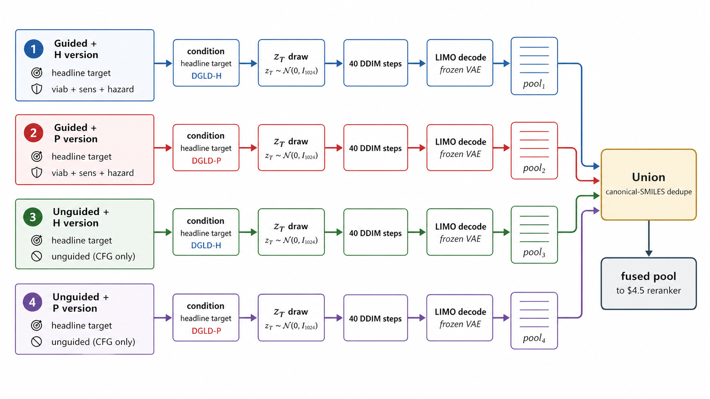
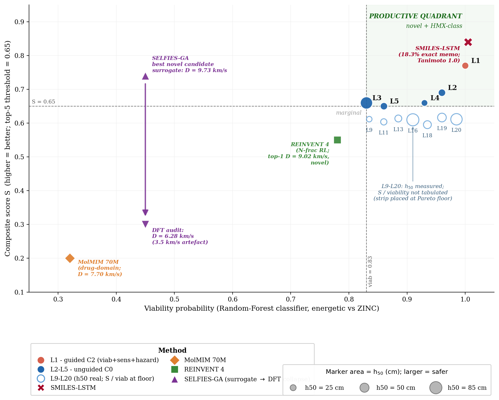
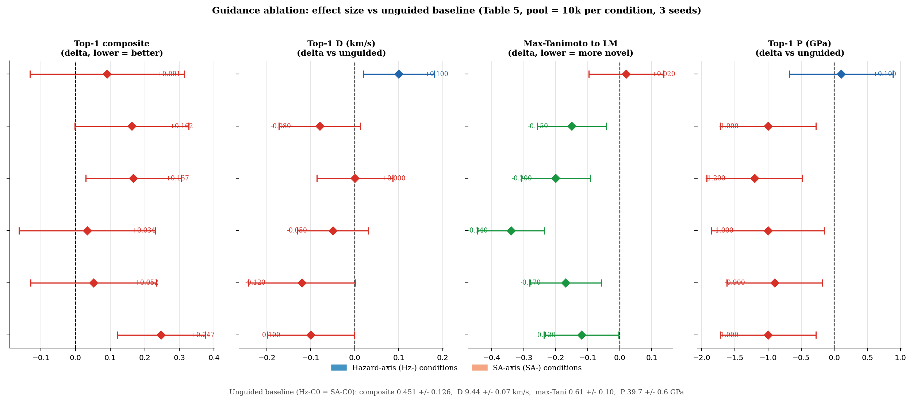

1Department of Intelligent Systems, Afeka Tel-Aviv College of Engineering, Israel. 2Department of Marine Technologies, School of Marine Sciences, Haifa University, Israel. 3School of Computer Science, Faculty of Sciences, HIT-Holon Institute of Technology, Israel.
Designing novel high-energy-density CHNO compounds is a sparse-label, multi-objective generation problem. The labelled corpus is tier-stratified: of \(\sim\)66 k labelled rows only \(\sim\)3 k rest on experimental measurements or first-principles DFT; the remainder come from empirical formulas and surrogate predictions of sharply lower reliability. Naive generative models trained on this data either memorise the high-performance tail or extrapolate without calibration. The standard property-steering tool for diffusion models, classifier guidance, silently misfires under the short sampling trajectories required for molecular latent diffusion.
We introduce Domain-Gated Latent Diffusion (DGLD), which addresses both failure modes. At training time, label quality gates which examples drive the conditional gradient and which train only the unconditional prior, preventing low-confidence surrogate labels from corrupting the targeted generation signal. At sample time, a multi-task score model supplies selectable per-step steering across viability, sensitivity, and hazard axes — acting as on/off switches over chemistry classes without retraining the diffusion backbone. Decoded candidates pass through a four-stage chemistry-validation funnel that escalates from fast rule-based filters to full first-principles DFT audit.
The merged top-100 yields 12 chem-pass leads (11 structurally distinct; L3 and L16 are the same compound, see §5.2.1): all are real local minima under B3LYP/6-31G(d), and 96 of 97 PubChem-evaluable candidates are absent from PubChem. The headline lead, trinitro-1,2-isoxazole (L1), reaches \(\rho_{\text{cal}} = 2.09\) g/cm3 and \(D_{\text{K-J,cal}} = 8.25\) km/s under six-anchor DFT calibration; the 3D-CNN surrogate predicts \(D = 9.56\) km/s. The 1.3 km/s gap is consistent with the documented Kamlet–Jacobs under-prediction at high N-fraction (\(r = +0.43\), \(p = 4 \times 10^{-27}\), §5.2.2), and relative ranking places L1 within the HMX/CL-20 performance band. L1 is at max-Tanimoto 0.27 to the 65 980-row labelled master. E1 (1,2,3,5-oxatriazole family) is a further lead from a chemically distinct family, pending an oxatriazole-class anchor extension (§7). DGLD is the only method whose top-1 candidate is in the novel-and-on-target quadrant at this evaluation budget against SMILES-LSTM, MolMIM, and SELFIES-GA baselines, and the only method with consistent multi-seed productive-quadrant coverage (the compute-matched SELFIES-GA 40k run has one novel candidate at D=9.73 km/s but 74% corpus rediscoveries overall, with a rediscovery as top-1); diffusion plus guidance lifts top-1 \(D\) by 0.3–0.5 km/s over a Gaussian-latent control (pool-size caveat in §5.5.2). The framework is domain-agnostic; only the validation funnel changes per domain. Trained checkpoints, sampling scripts, and 918 self-distillation hard negatives are released on Zenodo (DOI 10.5281/zenodo.19821953).
High-energy-density materials (HEDMs) underpin modern explosives, propellants, and gas generators, and incremental gains in detonation performance translate directly into smaller charges, higher specific impulse, and more efficient pyrotechnics. Yet the canonical performance anchors of the field, HMX and CL-20, were developed decades ago, and the cadence of new HMX/CL-20-class compounds reaching qualification has been slow. The space of synthesisable C/H/N/O small molecules with the right balance of crystal density, oxygen balance, heat of formation, and detonation kinetics is vast, but traditional discovery (intuition-led synthesis followed by characterisation) explores it slowly and without guarantees of optimality.
We pose the discovery task as conditional molecular generation: produce SMILES strings that simultaneously satisfy four conditioning targets (crystal density \(\rho\), heat of formation HOF, detonation velocity \(D\), detonation pressure \(P\) at the Chapman–Jouguet state), are absent from established chemistry databases (PubChem, our 694 k labelled master corpus), and correspond to real, synthesisable structures whose electronic ground state is a true local minimum.
Reliable labelled data is small (a few thousand experimental measurements), heterogeneous in provenance (DFT energies, Kamlet–Jacobs estimates, 3D-CNN surrogate predictions, each at different reliability), and expensive to extend: a single first-principles validation costs roughly one A100-hour, and an experimental synthesis far more. Surrogate predictors that fit well on the bulk of the distribution are poorly calibrated on the high-density, high-velocity tail where the design objective lives. End-to-end validation therefore requires falling back to first-principles audit (DFT), or, ultimately, synthesis.
Four families of methods have been brought to bear on the discovery task, each with limitations. Empirical formulas such as Kamlet–Jacobs [12] are fast and interpretable but regime-limited and lossy in high-nitrogen CHNO. Discriminative ML surrogates trained on 3D structure [15][16][14a] score candidates accurately but do not propose them. Generative SMILES language models trained directly on energetic corpora memorise their training data; pretrained chemical language models [4] propose genuinely novel chemistry but are uncalibrated for the explosives regime. Finally, the standard image-domain classifier-free-guidance recipe [14] ports poorly to small-step molecular latent diffusion, where the noise-dependent gradient anneal silently nullifies the guidance signal. §2 reviews each thread in detail.
We propose Domain-Gated Latent Diffusion (DGLD), which performs latent diffusion [18][17][19a] over a frozen, fine-tuned LIMO [1] encoder that maps SMILES to a 1024-d Gaussian latent [2][3], with the unlabelled half-million-row backbone of the augmented corpus drawn from ZINC [22]. At training time the model is gated by a four-tier label-trust hierarchy: Tier A experimental and Tier B DFT labels drive the conditional gradient through FiLM modulation, while Tier C Kamlet–Jacobs and Tier D 3D-CNN surrogate labels train only the unconditional prior via classifier-free-guidance dropout. At inference time it is gated by a four-stage pipeline (Stage 1 SMARTS gate, Stage 2 Pareto reranker, Stage 3 semi-empirical triage with GFN2-xTB, Stage 4 first-principles audit with B3LYP/6-31G(d) + \(\omega\)B97X-D3BJ/def2-TZVP DFT). A noise-conditional score model with one head per target property and per safety axis adds per-step steering signals at sample time, exposing the per-head scales as on/off switches over chemistry classes without retraining the diffusion model.
The top candidate, trinitro-1,2-isoxazole, sits in the polynitroisoxazole chemotype family known to the energetic-materials literature ([sabatini2018][tang2017]); the closest published fully-substituted ring identified in our literature review is Hervé and Roussel's 3,4,5-trinitro-1H-pyrazole ([herve2010]) in the isomeric pyrazole series (note: the Hervé 2010 title also cites "Related Trinitroisoxazole Chemistry"; whether 3,4,5-trinitro-1,2-isoxazole itself was characterised therein is not established from the title alone). The 3,4,5-trinitro-1,2-isoxazole isomer DGLD proposes (nitro groups C-substituted at the three carbon positions C3, C4, C5 of the 1,2-isoxazole ring; N-nitration is not involved) is absent from PubChem and from our 65 980-row labelled master corpus (max-Tanimoto 0.27); further verification against the full Hervé 2010 text and restricted databases is advised before claiming synthesis priority. It is predicted at HMX/CL-20-class properties by the 3D-CNN surrogate (\(\rho = 2.00\) g/cm3, \(D = 9.56\) km/s, \(P = 40.5\) GPa; DFT-calibrated: \(\rho_{\text{cal}} = 2.09\) g/cm3, \(D_{\text{K-J,cal}} = 8.25\) km/s, \(P_{\text{K-J,cal}} = 32.9\) GPa — within the HMX-class band by K-J relative ranking; see §5.2.2). It is confirmed as a real B3LYP/6-31G(d) local minimum and is template-reachable in a 4-step disconnection sequence over public USPTO reactions via AiZynthFinder (see §5.3.2 for the AiZynth in-stock dependency). The contribution is a chemotype rediscovery via property-targeted ML, demonstrating that the productive-quadrant gating plus DFT-validation chain works on a chemotype the chemistry-rules safety screen and the sensitivity head together rate as plausibly synthesisable and shock-tolerant. Across the merged paper top-100, 96/97 candidates are PubChem-novel. The baseline ladder isolates the diffusion-plus-guidance contribution. A SMILES-LSTM trained on the same 326 k energetic corpus produces a top-1 at Tanimoto = 1.000 to a labelled master row (exact memorisation, not discovery); a 70 M-parameter MolMIM drug-domain pretrained LM produces novel but uncalibrated chemistry at \(D = 7.70\) km/s, well below HMX; and a SELFIES-GA property-optimisation baseline produces 75/100 exact corpus rediscoveries at a 2 000-molecule budget. Only DGLD lands in the novel-and-on-target quadrant at this budget (Fig 1); see Fig 2 for the (\(D\), \(P\)) plane view of the top-200 leads.
The remainder of the paper is organised as follows. §2 reviews the literature; §3 describes the dataset; §4 describes the methodology; §5 reports experiments and validation; §6 summarises results; §7 discusses limitations; §8 concludes.

DGLD sits at the intersection of three lines of work: molecular generative modelling, diffusion models with classifier-style guidance, and property prediction for energetic materials. The central contribution being positioned is property-targeted molecular generation under tier-stratified labels, with end-to-end first-principles audit (DFT) on energetic chemistry. The literature reviewed below either supplies a building block we adopt (LIMO encoder, classifier-free guidance, FiLM conditioning, GFN2-xTB and PySCF for validation), defines a baseline we compare against (MolMIM, MOSES-style benchmarks), or stakes out a neighbouring problem domain (3D pocket-conditioned diffusion, drug-like generative benchmarking) whose techniques we deliberately do not transplant into the energetic-materials regime. We close the section by stating explicitly which gap DGLD fills.
VAE-based molecular generators learn a continuous latent over SMILES, SELFIES, or molecular graphs and navigate it for property optimisation. Gómez-Bombarelli et al. [gomez2018] introduced the encoder/decoder recipe over SMILES; the Junction-Tree VAE of Jin, Barzilay and Jaakkola [jin2018] moved the latent up to fragment graphs to guarantee chemical validity; CDDD [winter2019] learned the latent by translating between equivalent string representations and showed that the resulting descriptors transfer to property prediction; Mol-CycleGAN [maziarka2020] reframed property optimisation as image-to-image translation between molecule sets. SELFIES [krenn2020] replaced SMILES with a syntactically robust string representation in which every token sequence decodes to a valid graph, and is the representation we adopt at the encoder boundary.
Two more recent latent generators are particularly relevant to DGLD. LIMO [eckmann2022] couples an MLP-VAE over SELFIES with a non-autoregressive decoder, factoring decoding through a per-position categorical so that gradient-based latent optimisation does not have to differentiate through autoregressive sampling; LIMO is the encoder we fine-tune. MolMIM [reidenbach2023] trains a Perceiver-encoder [jaegle2021] mutual-information VAE on billion-scale SMILES and provides a strong no-diffusion baseline against which our latent-diffusion prior is compared.
Language-modelling approaches treat SMILES directly as a string. REINVENT [olivecrona2017] trained a recurrent generator on SMILES and biased it toward design objectives via reinforcement learning; ChemTS [yang2017] combined an RNN prior with Monte-Carlo tree search; MolGPT [bagal2022] applied a GPT-style decoder with property tokens prepended for control. MoLFormer-XL [ross2022] and Chemformer [irwin2022] showed that BERT/T5-style pretraining on hundreds of millions of SMILES yields representations that transfer cleanly to property-prediction tasks. The flow-network approach of Bengio et al. [bengio2021] reformulates non-iterative diverse candidate generation as flow matching over an implicit reward landscape and is conceptually closer to our guided sampling than to autoregressive language modelling. On the graph side, DiGress [vignac2023] performs discrete denoising diffusion directly on molecular graphs, achieving exact validity at the cost of having to re-introduce property conditioning via a separate guidance term.
Denoising diffusion probabilistic models [ho2020] and the score-based formulation of Song and Ermon [song2019], later unified through a stochastic-differential-equation perspective [song2021], define the generative-modelling family that DGLD builds on. Latent diffusion [rombach2022] separates perceptual compression from prior modelling by running the diffusion process in the latent space of a frozen autoencoder, a recipe we transplant from images to molecules: the LIMO encoder fixes the latent geometry, and the diffusion model only has to learn the prior over that latent.
For property control we adopt the classifier-free guidance scheme of Ho and Salimans [ho2022], in which a single denoiser is trained jointly with and without the conditioning signal and the conditioning gradient is reconstructed at sample time: $$\hat{\epsilon}_{\theta}(z_t, c) \;=\; \epsilon_{\theta}(z_t, \emptyset) \;+\; w \cdot \big(\epsilon_{\theta}(z_t, c) - \epsilon_{\theta}(z_t, \emptyset)\big).$$ Classifier-free guidance avoids the separately-trained property predictor required by its noise-conditional ancestor, classifier guidance [dhariwal2021]. DGLD combines both regimes: classifier-free guidance over the four detonation targets, plus a small noise-conditional multi-task score model whose per-head gradients are added at every diffusion step (§4.7). Conditioning is injected into the residual blocks of the denoiser through FiLM-style affine feature-wise modulation [perez2018], the standard mechanism for property conditioning in image and molecular diffusion alike.
A parallel line of work runs diffusion directly on 3D molecular geometries rather than on a learned latent. Equivariant Diffusion (EDM) [hoogeboom2022] diffuses atom positions and types under SE(3)-equivariant networks, providing the architectural template for subsequent target-aware variants. DiffSBDD [schneuing2022] and TargetDiff [guan2023] condition the diffusion process on a 3D protein pocket; Pocket2Mol [peng2022] samples atoms autoregressively inside the pocket; DiffDock [corso2023] recasts molecular docking itself as a generative diffusion problem over translation, rotation, and torsion. MolDiff [peng2023] addresses the atom-bond inconsistency that arises when atom positions and bond types are diffused independently.
DGLD differs from this family in two respects. First, the conditioning signal is a continuous physical property of the molecule itself (density, heat of formation, detonation velocity, detonation pressure), not the geometry of an external receptor; latent-space diffusion is the more natural fit and avoids 3D-conformer preprocessing at every training step. Second, the energetic-materials regime imposes a tier-stratified label-trust structure (computed K-J labels vs. measured detonation properties) that has no analogue in pocket-based drug design and that drives the conditioning-mask design of §4.
The Kamlet–Jacobs equations [kamlet1968] remain the closed-form workhorse for fast detonation-property estimates of CHNO explosives and supply our Tier C labels; they are regime-limited and under-predict in the high-nitrogen tail (§5.2.2, Appendix D). Casey et al. [casey2020] train 3D convolutional networks on electronic-structure-derived volumetric inputs to predict detonation properties from first principles; we use an ensemble in this family as our fast post-rerank scorer. Uni-Mol [zhou2023] provides a 3D pre-training backbone whose representations transfer to organic property prediction and which the smoke-model ensemble draws on. Elton et al. [elton2018] showed that simple feature-engineered ML pipelines match Kamlet–Jacobs accuracy across a broad CHNO set, establishing the property-prediction baseline that any generative work must beat. The pre-experimental screening recipe used in §5.2.2, DFT-derived \(\rho\) and HOF, calibrated against a small set of reference explosives, then plugged into the Kamlet–Jacobs equations for \(D\) and \(P\), is a standard pattern in computational energetic-materials chemistry, applied across the field in different functional / basis / anchor combinations: Politzer and Murray [politzer2014] develop the BDE-anchored sensitivity correlations we adopt for the \(h_{50}\) head; Mathieu [mathieu2017] reviews the systematic-bias bands that motivate anchor-calibration. Specialised codes EXPLO5 [suceska2018] and Cheetah [fried2014] replace the closed-form K-J step with a thermochemical-equilibrium Chapman–Jouguet solver and a covolume EOS, and remain the absolute-value-grade reference; we use K-J as the closed-form approximation and acknowledge the absolute-value gap explicitly (§5.2.2).
Sensitivity prediction is the harder discriminative half of the field. Nefati, Cense and Legendre [nefati1996] trained an early neural network on impact-sensitivity data; Mathieu [mathieu2017] reviewed the theoretical relationships between molecular structure, detonation performance, and sensitivity; Huang and Massa [huang2021] applied modern ML to the performance/stability trade-off, showing that h50 impact-height is learnable from descriptors and provides the regression target our hazard head approximates. The synthesis-chemistry review of Klapötke [klapotke2017] codifies the qualitative fragment priors (nitrogen-rich heterocycles, nitramines, azides) on which our motif-augmented training set is built.
Generative work targeting the energetic-materials high-energy tail is comparatively recent and is constrained by the small size of the labelled corpus. The closest spiritual analogue to DGLD is the constrained Bayesian optimisation in a VAE latent of Griffiths and Hernández-Lobato [griffiths2020], which navigates a learned molecular prior under chemistry constraints; classifier-free latent diffusion subsumes this recipe in a single end-to-end model whose gradient comes from the score function rather than from a separately-trained acquisition oracle. The performance/stability balancing study of Huang et al. [huang2021], already cited above for sensitivity prediction, is the property-prediction-side counterpart of the multi-head trade-off DGLD enforces at generation time. The bulk of the prior ML work on energetic materials has been discriminative; the four-tier label hierarchy and tier-stratified conditioning-mask of §3 and §4 are designed precisely to make property-targeted generation viable in this small-and-noisy-label regime.
Outside the energetic-materials niche, several general-purpose molecular property predictors set the methodological context. Chemprop / D-MPNN [yang2019] remains a strong message-passing-graph default; SchNet [schutt2018] introduced continuous-filter convolutions for atomistic systems and achieves DFT-level accuracy on energy and force predictions; OrbNet [qiao2020] uses symmetry-adapted atomic-orbital features to predict quantum-chemical observables at semi-empirical cost. We do not use these networks directly: the smoke-model 3D-CNN ensemble is trained against detonation outputs and is in-distribution for the energetic-materials task, while these graph and quantum-aware models would have to be re-fit to detonation labels before they could substitute for it. They define the broader prediction-quality envelope against which the smoke-model ensemble's accuracy on CHNO chemistry should be read.
The MOSES [polykovskiy2020] and GuacaMol [brown2019] benchmarks have standardised the evaluation of molecular generators on validity, novelty, uniqueness, and similarity-to-training metrics. The Fréchet ChemNet Distance [preuer2018] reports distributional similarity between generated and reference sets in a learned chemical-feature space and provides a pretrained-feature analogue of FID for chemistry. The chemical-space project of Reymond [reymond2015], with its enumerated GDB-13 and GDB-17 reference sets, bounds how much of small-molecule space remains untouched by generative models and contextualises any novelty claim. We adopt MOSES-style metrics in Appendix E.11 and treat FCD as a chemistry-class-transfer signal rather than a within-domain quality metric, since the ChemNet feature extractor is trained on drug-like ZINC+PubChem chemistry.
Synthesisability is a separate concern. The SA score of Ertl and Schuffenhauer [ertl2009] penalises uncommon ring fusions and rare fragments and is a fast, well-calibrated bound on accessibility; the SCScore of Coley et al. [coley2018] learns a complexity proxy from a reaction corpus and complements SA by rewarding fragments that appear as reaction products. We apply both as hard caps in the rerank pipeline. Tanimoto similarity [rogers1960] on Morgan fingerprints provides a simple, well-understood novelty bound against the training set; we use a window (0.20, 0.55) to keep candidates close enough to known chemistry to be plausible but far enough to count as new.
The validation half of the DGLD pipeline relies on three external tools that are not part of the generative-modelling literature. GFN2-xTB [bannwarth2019] is the semi-empirical tight-binding method we use for sample-time HOMO–LUMO gap triage on top leads (§5.2.2, §5.5.4); it runs in seconds per molecule on CPU, is well-calibrated for organic CHNO, and provides a stability proxy that is independent of the 3D-CNN surrogate's training distribution. The gpu4pyscf bindings on top of the PySCF framework [sun2020] supply our DFT pipeline (§5.2.2, Appendix D). GPU offloading reduces a single B3LYP/6-31G(d) opt + Hessian for a 15–25-atom CHNO molecule from hours on CPU to under one hour on a single A100, which is what makes per-lead first-principles validation budget-feasible. AiZynthFinder [genheden2020] performs the retrosynthetic plausibility check of §5.3.2 via Monte-Carlo tree search over a USPTO template set against a ZINC in-stock catalog; we treat it as a positive-only check, since an empty result reflects template-database scope rather than unsynthesisability. The accuracy expected of any DFT functional we use is calibrated by the GMTKN55 benchmark suite of Goerigk et al. [goerigk2017], which evaluates the density-functional zoo over a broad cross-section of main-group thermochemistry, kinetics and noncovalent interactions and grounds our choice of functional and basis.
We assemble the training data by collecting molecules from several public sources that differ in both reliability and chemical scope. A small experimental core carries detonation properties measured in the laboratory; a larger DFT-quality slice carries energies and densities from first-principles simulation; a wider Kamlet–Jacobs-derived layer carries closed-form estimates from quoted density and heat of formation; and a model-derived majority carries surrogate predictions from a 3D-CNN ensemble trained on the union of the higher tiers. Some sources are restricted to energetic CHNO and CHNOClF chemistry (a labelled master of \(\sim 66\) k canonical SMILES with at least one measured property and a motif-augmented expansion that systematically substitutes nitro / nitramine / azide / tetrazole groups onto labelled scaffolds); others draw from broader chemistry corpora (an unlabelled energetic SMILES dump of \(\sim 380\) k from the same chemical domain) that the diffusion model uses only to learn the unconditional prior. Every row is canonicalised to a single RDKit canonical SMILES, deduplicated across sources, and tagged with a trust tier; each property label is then used according to its reliability via the conditioning-mask recipe of §3.1. After cross-source deduplication and token-length filtering, the merged pretraining pool comprises \(\sim 694\) k unique molecules (pre-deduplication: 66k labelled + 380k unlabelled CHNO + 1.08M motif-augmented expansions = 1.53M; after canonical-SMILES deduplication across all three pools: 694k unique molecules; the motif-augmented pool contributes ~230k survivors after dedup with the base two pools), of which \(\sim 66\) k carry at least one property label. The complete source provenance (per-source row counts, citations, license terms, role in the four-tier hierarchy), the canonicalisation and tokenisation pipeline, and the high-tail oversampling ratios used during training are documented in Appendix A.1 / D. Joint property distributions and per-property histograms over the labelled corpus are shown in Figs 3 and 4; the label-tier composition (Fig 5) sits alongside the four-tier table in §3.1; atom-composition statistics over a 30k subsample are shown in Fig A.1.


Available property labels in the energetic-materials literature span four orders of reliability, from a small core of experimental measurements to a large majority of model-derived estimates. A naive concatenation would let the noisiest tier dominate the conditional gradient and degrade calibration in the high-property tail; discarding the noisier tiers would throw away most of the training signal. We resolve this by annotating each property label with a trust tier and gating the conditional gradient accordingly: only Tier-A and Tier-B rows participate in the conditional signal, while Tier-C and Tier-D rows train the unconditional prior via classifier-free-guidance dropout (§4.3). Each label per row carries one of the following tiers:

| Tier | Source | ~ rows | Trusted for conditioning? |
|---|---|---|---|
| A | Experimental measurement (literature) | ~3 000 | yes |
| B | DFT-derived (B3LYP/6-31G* heat of formation; experimentally-anchored density) | ~9 000 | yes |
| C | Kamlet–Jacobs derived from quoted density & HOF (regime-limited: reliable for oxygen-deficient CHNO with \(2a + b/2 \ge d \ge b/2\); under-predicts \(D\) for high-N low-H compounds where the assumed gas-product distribution is wrong) | ~25 000 | no (mask out) |
| D | 3D-CNN smoke-model surrogate | ~30 000 | no (mask out) |
The denoiser conditional gradient fires only on Tier-A and Tier-B rows; Tier-C and Tier-D rows train the unconditional prior via classifier-free-guidance dropout (§4.3). This recipe lets the full corpus shape the marginal density of the generative model without letting noisy labels contaminate the conditional gradient. Each row carries a graded tier weight \(\omega\in[0,1]\), with default values \(w_A=1.0\), \(w_B=0.7\), \(w_C=0.3\), \(w_D=0.1\); later sections gate the conditional gradient and weight the per-row loss by these values.
Every SMILES string is canonicalised with RDKit [22a] (a fixed traversal order so that the same molecule yields the same string regardless of how the source database wrote it), converted to SELFIES (a robust tokenisation in which every legal token sequence decodes to a chemically valid molecule), and tokenised to the LIMO alphabet. Tokenisation, alphabet size, and the per-source preprocessing pipeline are in Appendix A.2. This step is purely data-side: no learned parameters are fit here; the output is a token-tensor representation of the corpus that the model of §4 will consume.
The labelled detonation-velocity distribution is sharply peaked around 7–8 km/s, so during training Tier-A/B rows above the 90th percentile are oversampled by 5×–10×; this asymmetric high-tail oversampling raises the mean predicted velocity of the top leads by 0.4 km/s relative to a uniform-sampling control. The oversampling ablation is in Appendix E.4. The two denoiser variants of §4.3 differ in which property tail they apply this oversampling to (HOF tail vs ρ/D/P tail).
DGLD is a four-stage pipeline (Figs 6–15): an encode-once LIMO VAE (Fig 7) feeds a conditional latent DDPM denoiser (Fig 9), whose sampling trajectory (Fig 13) is steered by a multi-task score model trained offline (Fig 11), and whose decoded candidates are filtered by a SMARTS+Pareto rerank funnel (Fig 14). The rest of §4 is organised one subsection per diagram panel; small panels are paired (§4.6 covers Fig 10 and §4.7 covers Fig 11), and the post-decode pipeline is split across three subsections (§4.9 Sampling covers Fig 13, §4.10 Filtering covers Fig 14, §4.11 Pool fusion covers Fig 15). §4.12 documents how every numeric constant in §4.2–§4.11 was selected. LIMO encoding is run once and cached, so all training and sampling happens in latent space; the decoder is invoked only at the end to read candidates back as SMILES. The conditional gradient is restricted to Tier-A and Tier-B rows; Tier-C and Tier-D rows drive the unconditional CFG branch only (§3.1, §4.3).

LIMO is the molecular-text VAE that supplies the cached latent μ used everywhere downstream. We fine-tune the pretrained checkpoint on the 326k energetic corpus to specialise the encoder, then freeze it for the rest of the pipeline. Sampling during fine-tuning is uniform; high-tail oversampling lives at the §4.4 denoiser-training stage and is not applied here.
We start from the pretrained LIMO checkpoint distributed with [1]. The encoder maps a (B, 72) SELFIES-token tensor through a 64-dim embedding and a four-layer MLP (Linear(72·64→2000)–ReLU–Linear(2000→1000)–BN–ReLU–Linear(1000→1000)–BN–ReLU–Linear(1000→2·1024)) to a (B, 1024) Gaussian latent (the final 2·1024 head packs μ and log σ2); the decoder mirrors this with Linear(1024→1000)–BN–ReLU–Linear(1000→1000)–BN–ReLU–Linear(1000→2000)–ReLU–Linear(2000→72·108) and produces a (B, 72, 108) log-probability tensor in parallel (no autoregression). Layer-by-layer widths and parameter counts are in Table C.1. We fine-tune all parameters for \(\sim\)8.5k steps on the 326 k energetic-biased SMILES corpus with the standard ELBO, $$\mathcal{L}(x) \;=\; -\mathbb{E}_{q(z|x)}[\log p(x|z)] \;+\; \beta \cdot \mathrm{KL}(q(z|x) \,\|\, \mathcal{N}(0,I)),$$ with \(\beta=0.01\) and free-bits clipping disabled. After fine-tuning, validation token-accuracy is 64.5 %. The LIMO decoder is non-autoregressive (parallel decode); SELFIES syntax guarantees token-level validity, so molecule-level (full-sequence) validity is 100% by construction. Reconstruction accuracy (fraction of latent round-trips that reproduce the input SMILES exactly) is 31.4% on the energetic validation set, consistent with the expected LIMO performance in this domain. The latent posterior is concentrated: \(\|\mu\|\approx 8\) on average, well below the \(\sqrt{1024}\approx 32\) expected of \(\mathcal{N}(0,I)\); §6 discusses how this contraction affects diffusion-time decoding.

After fine-tuning the encoder is frozen and every row of the data corpus (§3) is passed through it once to produce a deterministic latent mean \(\mu \in \mathbb{R}^{1024}\). The cached tensor stores, per row, the latent \(\mu\), a property matrix (the four conditioning targets \(\rho\), HOF, \(D\), \(P\)), a tier matrix, a per-row trust mask, and per-property normalisation statistics. The encoder posterior variance is discarded by design; \(\mu\) is treated as a deterministic anchor in latent space, and no SMILES is ever re-encoded at sample time. The denoiser of §4.3 and the score model of §4.7 read from this cached tensor only.
Each gradient step samples a fresh per-row mask m∈{0,1}4 that decides which of the four conditional properties are exposed to the denoiser at that step. The mask is the mechanism by which tier-eligibility (which labels a row carries) interacts with classifier-free dropout (the unconditional branch trained alongside the conditional).
The per-step training mask \(m\in\{0,1\}^4\) controls which conditioning properties enter FiLM at each step; the construction is a 5-stage stochastic pipeline over the per-row eligibility \(e\) and tier weight \(w\) of §3.1.
Figure 8 walks the per-step mask construction. From cached eligibility \(e\in\{0,1\}^4\) (renamed from \(c\) to avoid collision with the conditioning vector) and the tier weight \(w\) of §3.1, five stochastic stages produce \(m\): the subset-size box samples \(k\) from a Categorical with probabilities \(\{0{:}.10,\,1{:}.25,\,2{:}.30,\,3{:}.25,\,4{:}.10\}\); the weighted pick box samples \(k\) properties from \(e\) using \(w\)-weighted multinomial draws to form a tentative one-hot; property dropout at rate 0.30 then independently zeros each entry of the tentative mask; CFG dropout at rate 0.10 zeros the entire mask to feed the unconditional branch.

The output \(m\) and the row weight \(\omega_{\text{row}} = \alpha + (1{-}\alpha)\cdot\mathrm{mean}(w \odot m)\) are emitted to the denoiser-training step of §4.4, where \(w\) is the per-property tier-weight vector and \(\alpha \in [0,1]\) is the trust-vs-uniform interpolant (default \(\alpha=1.0\), reducing to plain MSE; \(\alpha < 1.0\) up-weights more-trusted rows). The mask \(m\) gates only the FiLM property input; it does not appear in the loss.
The denoiser learns the noise-predicting reverse process of a 1000-step variance-preserving DDPM in latent space, conditioned via FiLM on the §4.3 mask + property vector. Classifier-free guidance dropout at training time enables the runtime trade-off between unconditional and target-property sampling controlled by the CFG scale w.
The denoiser \(\epsilon_{\theta}(z_t, t, c, m)\) is a 44.6 M-parameter FiLM-modulated ResNet over \(z_t \in \mathbb{R}^{1024}\) with 8 residual blocks of inner width 2048 (per-block: LayerNorm, Linear(1024 to 2048), FiLM(\(\gamma,\beta\) from cond), SiLU, Linear(2048 to 1024) with a residual add), a sinusoidal time embedding (\(d_t=256\)), and a sinusoidal property-value embedding (\(d_c=64\)) gated by the per-step mask \(m\in\{0,1\}^4\) of §4.3 (full hyperparameters in Table C.1).
Figure 9 walks denoiser training. Per step: sample \(t \sim \mathcal{U}\{1{:}T\}\) and \(\varepsilon \sim \mathcal{N}(0,I)\); form \(z_t = \sqrt{\bar\alpha_t}\,z_0 + \sqrt{1-\bar\alpha_t}\,\varepsilon\) on the cosine \(T=1000\) DDPM schedule of Nichol & Dhariwal [dhariwal2021]; FiLM injects \((t,\,p\odot m)\); the network predicts \(\hat\varepsilon\); the loss is the per-sample MSE \(\Vert\varepsilon - \hat\varepsilon\Vert^2\) weighted by the row weight \(\omega_{\text{row}}\) of §4.3. Optimiser AdamW, peak LR \(10^{-4}\), cosine decay, batch 128, 20 epochs, EMA decay 0.999.

At sample time we use the standard guided estimate $$\hat\epsilon_{\theta}(z_t, c) \;=\; \epsilon_{\theta}(z_t, t, \emptyset) \;+\; w\,\big(\epsilon_{\theta}(z_t, t, c) - \epsilon_{\theta}(z_t, t, \emptyset)\big);$$ the production scale \(w = 7\) is selected per §4.12 (Figure 16).
The headline pipeline targets \(\rho\), \(D\), \(P\), and HOF simultaneously. Their labelled-corpus marginals have sharply different population statistics: the high-HOF tail and the high-\(\rho DP\) tail barely overlap in latent space. A single denoiser must compromise between these tails. Either tail can be trained to saturate, but not both at once with one loss-weighting schedule. We therefore train two complementary denoisers, each tilted toward one tail via training-time oversampling, so that each saturates its own tail.
DGLD-H tilts toward the HOF tail (asymmetric high-tail oversampling on Tier-A/B, factor 5×, focused on heat of formation). DGLD-P tilts toward the \(\rho DP\) tail (Tier-A/B-only conditioning, +5× high-tail oversampling on the top decile of the joint \(\rho/D/P\) distribution, weighted_mask=true, property-dropout 0.30). Both are 44.6 M-parameter FiLM-ResNets with the §4.4 architecture; only the training-data tilt differs. Hyperparameters of both checkpoints are listed in Table C.1.
Empirically DGLD-H supplies high-HOF leads and DGLD-P supplies high-\(\rho/P\) leads. Combination happens post-decode in §4.11 (Figure 15): we union the lanes' SMILES pools and run them once through the rerank funnel. We do not average outputs or interpolate weights, so this is not a classical ensemble in that sense.
Each score-model head needs per-row training labels. We run six independent label-source pipelines once over the corpus, before any score-model training begins. Three feed active steering signals (Viability, Sensitivity, Hazard) with energetic-domain or rule-based labels; three feed auxiliary multi-task heads (Performance, SA, SC) with smoke-ensemble or drug-domain labels.
Each head plays a distinct role. Viability is the gatekeeper gradient that steers away from non-energetic regions; Sensitivity and Hazard are the safety axes the user cares about. These three are the active steering signals invoked at sample time. Performance, SA, and SC are auxiliary multi-task heads: trained on the shared trunk for regularisation but not invoked in the steering bus. Stage 2 of the Figure 14 reranker uses the 3D-CNN smoke ensemble (§4.10) for property scoring, not the latent Performance head.
Figure 10 walks the base label pipelines. A Random Forest on Morgan FP + RDKit descriptors yields \(y_{\text{viab}}\); a Politzer–Murray BDE chemotype-class fit on Huang & Massa [58a] \(h_{50}\) data yields \(y_{\text{sens}}\) (y_sens ∈ [0,1] with 1 = high sensitivity / dangerous; guidance descends this signal to reduce predicted sensitivity); the chemist-curated SMARTS catalog plus the Bruns–Watson demerit list yields \(y_{\text{haz}}\); and a 3D-CNN/Uni-Mol smoke ensemble yields \(y_{\text{perf}} \in \mathbb{R}^4\) over \((\rho, D, P, \mathrm{HOF})\). The cached LIMO \(\mu\) is held separately for the noised-latent training of the score model. Random Forest probability is portable, smooth, and decoupled; see Appendix C.1.

All six heads are trained jointly on a shared 4-block FiLM-MLP trunk under multi-task supervision. The trunk is regularised by all six losses; at sample time, only the three active steering signals are actually invoked. Auxiliary multi-task heads (Performance, SA, SC) earn their trunk-improving role during training but stay quiet during sampling.
The score-model trunk and six heads are trained on noised LIMO latents using the labels of §4.6 under multi-task supervision: three of the six (Viability, Sensitivity, Hazard) contribute steering signals at sample time, three (Performance, SA, SC) are auxiliary multi-task signals trained for trunk regularisation only.
Figure 11 walks score-model training. A shared 4-block FiLM-MLP trunk (1024-d hidden) consumes \((z_t, \sigma_t)\), where \(\sigma_t = \sqrt{1-\bar\alpha_t}\) is embedded into a 128-d sinusoidal token. Six heads branch off the trunk: Viability and Hazard are sigmoid heads trained with binary cross-entropy; Sensitivity, SA, and SC are smooth-L1 regressors; Performance is a 4-vector smooth-L1 regressor on \((\rho, D, P, \mathrm{HOF})\). Crucially, training data are noised latents at uniform \(t\), not clean \(\mu\), so the gradient is queried at every \(\sigma_t\) along the sampling trajectory. The total loss is the availability-mask-gated sum $$\mathcal{L}_{\text{score}} = \sum_k a_k \cdot w_k \cdot \mathcal{L}_k\bigl(\hat y_k(z_t, \sigma_t),\ y_k\bigr),$$ where \(a \in \{0,1\}^6\) is the per-head availability mask (distinct from the denoiser's per-property conditioning mask \(m \in \{0,1\}^4\) of Figs 8 and 9) and \(w_k\) are static head weights chosen so each \(\mathcal{L}_k\) sits at \(\mathcal{O}(1)\) at convergence (values in Table C.1). Optimiser AdamW, peak LR \(10^{-4}\) (v3f uses 2×10⁻⁴ peak LR with cosine decay; Table C.1 lists the v3f value; earlier v3d used 1×10⁻⁴), cosine decay, batch 1024, \(\sim\)40k steps, EMA decay 0.999. (v3f production run; earlier variants used batch 512 for 12 epochs — the Table C.1 entry reflects the v3d/v3e intermediate checkpoint.)

The auxiliary multi-task heads (Performance, SA, SC) train on the shared trunk for regularisation only, not invoked in the production steering bus (Appendix C.4).
Round-0 viability labels combine SMARTS pass/fail with a Random Forest classifier trained on (energetic corpus, ZINC drug-like), a coarse two-class boundary. Self-distillation closes the gap between that boundary and the latent regions the diffusion sampler actually inhabits, by mining the model's own false-positive cheats and re-feeding them as labelled hard negatives.
The FROZEN banner of Figure 12 is read literally. Across all rounds the LIMO encoder, LIMO decoder, the §4.5 denoisers, the Random Forest, and the SMARTS rulebook do not retrain. The score-model trunk and heads are the only thing that updates between rounds. Within the score model, hard-negative latents are labelled \(y_{\text{viab}} = 0\) only; the other heads see those rows with \(a_k = 0\) (unlabelled).
The five-step protocol (sample → mine → encode → retrain → probe) is detailed in Appendix C.1. The hard-negative ticker on Figure 12 shows 0 \(\to\) 137 \(\to\) 918 cumulative negatives over rounds 0/1/2. (round-0 training uses 0 hard negatives; round-0 mining produces 137; round-1 training uses 137; round-1 mining cumulates to 918; round-2 / production training uses 918.)

The stopping criterion is shown in the right-margin box of Figure 12: a held-out probe (7 anchors {RDX, HMX, TNT, FOX-7, PETN, TATB, NTO} and 5 cheats) must show every anchor at \(\ge\) 0.86 AND every cheat at \(\le\) 0.84. Empirically 3 rounds satisfy this; round 2 (corpus + 918 hard negatives) is the production checkpoint. Pseudocode in Appendix C.1.
At sample time, three of the six trained heads (Viability, Sensitivity, Hazard) supply gradient steering signals at every DDIM step on top of classifier-free guidance. The denoiser remains the same checkpoint as §4.4; only the sampler changes.
Figure 13 walks sampling. A latent \(z_T \sim \mathcal{N}(0, I_{1024})\) is denoised over \(t = T \to 1\) in 40 DDIM steps. At each step, $$\hat\epsilon \;=\; \epsilon_\theta^{\text{cfg}}(z_t, t, c) \;-\; \sigma_t \sum_{h\in\{\text{viab},\text{sens},\text{hazard}\}} s_h\,\nabla_{z_t}\,\mathcal{L}_h\big(z_t,\sigma_t\big),$$ where \(\epsilon_\theta^{\text{cfg}}\) is the standard CFG noise estimate over the frozen denoiser of §4.5 (Figure 9). The per-head losses are \(-\log P_{\text{viab}}\) (ascend), \(\mathrm{sens}_z\) (descend), and \(-\log(1-P_{\text{hazard}})\) (descend hazard). Production scales are \(s_{\text{viab}}=1.0\), \(s_{\text{sens}}=0.3\), \(s_{\text{hazard}}=1.0\) (selection rationale in §4.12). The final \(z_0\) decodes through the frozen LIMO decoder to a SMILES pool consumed by Figure 15.

The classifier-guidance steering bus uses two configurable knobs: a noise-dependent annealing factor \(\alpha(\sigma_t) = \max(0,\,1 - \sigma_t/\sigma_{\max})\) that scales the bus down at high noise levels (where the score-model heads have not yet seen enough latent structure to be reliable), and a per-row gradient-norm clamp at magnitude \(C_g\) (gradient clamp) that prevents a single row from dominating the batch. The image-domain classifier-guidance recipe of Dhariwal & Nichol [15a] uses \(\sigma_{\max} = \sigma_T\) (full ramp on) and \(C_g = 5.0\); this works well at 1000 sampling steps, where each step covers a small \(\sigma\)-jump and the natural per-row gradient magnitudes sit well below 5. In the 40-step latent regime the same recipe zeroes the bus at the top of the trajectory (the first \(\sim\)10 steps live near \(\sigma_t \approx \sigma_T\)) and saturates the clamp at the bottom (natural gradient magnitudes at low \(\sigma\) are 8–30, well above 5), so the per-head scales \(s_h\) have negligible effect on the produced chemistry. Production therefore disables the anneal (\(\sigma_{\max}=0\), so \(\alpha(\sigma_t) \equiv 1\)) and loosens the clamp (\(C_g = 50\)). The four-test diagnostic that mapped per-step gradient norms across both configurations is in Appendix E.5.
The decoded SMILES pool flows through a four-stage funnel that progressively raises the bar from cheap chemistry rules (SMARTS gate) to expensive first-principles audits (DFT). Stages 1+2 (ms cost per candidate) score every candidate; Stages 3+4 (CPU- and GPU-hours per candidate) run only on the top-K survivors.
Figure 14 walks the four-stage filtering funnel. Each pool is canonicalised, deduplicated, and stripped of charged species and over-large molecules. Stage 1: SMARTS gate (rules + redflags). A chemist-curated SMARTS [daylight-smarts] catalog removes radicals, sulphur, halogens, mixed valence states, and other red flags; survivors are scored by the 3D-CNN smoke ensemble. SA [19] \(\le\) 5.0 and SCScore [20] \(\le\) 3.5 caps are applied. Tanimoto similarity to the nearest training-set neighbour is required to lie within \([0.20, 0.55]\). Stage 2: Pareto reranker. The composite
$$S(x) \;=\; 0.45\,S_{\text{perf}}^{\text{band}}(x) + 0.20\,S_{\text{viab}}(x) + 0.15\,S_{\text{novel}}(x) + 0.20\,(1-S_{\text{sens}}(x)) - 0.10\,S_{\text{alerts}}(x)$$
is computed, then a Pareto front over (\(-\)perf, \(-\)viab, sens, alerts) is used as the outer stratifier with the composite as within-stratum tiebreak. Default top-\(K=100\). The Stage-2 reranker draws property scores (\(\rho, D, P, \mathrm{HOF}\)) from the 3D-CNN smoke ensemble (via evaluate_candidates.py + rerank_v2.py), not from the latent Performance head; the latent Performance head trains as a multi-task auxiliary on the shared trunk for regularisation only and is not invoked at rerank time. Stage 3: xTB triage. GFN2-xTB optimisation, HOMO–LUMO gap \(\ge\) 1.5 eV (§5.2.2). Stage 4: DFT audit. B3LYP/6-31G(d) optimisation + \(\omega\)B97X-D3BJ/def2-TZVP single-point + 6-anchor calibration + Kamlet–Jacobs (§5.2.2). Illustrative survivors: 40k \(\to\) 8k chem-pass \(\to\) 100 \(\to\) 12 DFT-validated.

The Pareto-front procedure in Stage 2 is the four-step sweep:
A single sampling lane fixes one (denoiser, conditions, guidance) tuple. Pool fusion runs multiple lanes in parallel and unions their decoded SMILES outputs, exploiting the lanes' independent failure modes for diversity. The §4.10 reranker is what tie-breaks across the fused pool.
Figure 15 walks pool fusion. A single sampling lane = one (denoiser, conditions, guidance) tuple, run end-to-end (\(z_T\) draw \(\to\) 40 DDIM with that lane's config \(\to\) LIMO decode \(\to\) SMILES pool). The production methodology recipe is two lanes, one per denoiser (DGLD-H and DGLD-P), both at the headline target conditions, both at viab+sens+hazard guidance, both at CFG \(w=7\), pool \(\ge\) 40k each. Fusion is post-decode: the lanes' pools are unioned, canonical-SMILES deduplicated, and fed into the Stage-1 reranker. The three orthogonal diversity axes are conditions, denoisers, and guidance; each breaks a different correlated failure mode. The §5.5.4 four-pool merge (which adds two unguided ablation lanes) is a presentation choice for the merged top-100 result, not the production methodology recipe.

Every numeric constant in §4.2-§4.11 is selected by one of four mechanisms: empirically swept, stop-criterion-driven, inherited from prior work, or chemist-set. This section walks each bucket and flags what was empirically verified versus what was a defensible default.
Every numeric constant introduced in §4.2–§4.11 falls into one of four buckets, distinguished by how the value was set: empirical sweeps, stop-criterion-driven counts, values inherited from prior work, and chemist-set thresholds. The remainder of this section walks each bucket in turn, then closes with the limitations of the selection procedure.
The first bucket is empirically swept. Two knobs were swept directly under the post-filter survival metric: the classifier-free-guidance scale \(w\) (Figure 16) and the candidate pool size (Figure 17). The CFG scale was tested at three points, \(w \in \{5, 7, 9\}\) at pool=8k, ranked by post-filter yield; \(w=7\) is the empirical sweet spot, with more candidates surviving than at \(w=5\) and the tight-mode collapse at \(w=9\) avoided. The pool-size sweep ranged from 1.5k to 40k, with both the best composite and the post-filter survival count still climbing at 40k; production uses pool \(\ge\) 40k per lane. The per-head guidance scales \(s_h\) were also empirically chosen via the §5.5.4 multi-axis matrix (full grid in Appendix E.6), and the score-head loss weights \(w_k\) were hand-set so each \(\mathcal{L}_k\) sits at \(\mathcal{O}(1)\) at convergence (ablation in Appendix C.3).


The second bucket is stop-criterion-driven. The number of self-distillation rounds (3) was set by the held-out probe described in §4.8, which requires every anchor at \(\ge\) 0.86 and every cheat at \(\le\) 0.84; the round-2 checkpoint is the first to satisfy both conditions and is therefore the production checkpoint. The hard-negative count (918) is the cumulative round-2 mining yield, not a tuned target.
The third bucket is inherited from prior work or community convention and is not retuned in this paper. The KL weight \(\beta = 0.01\) is the LIMO original; the DDPM uses the cosine \(T = 1000\) schedule of Ho et al. [18]; the per-property dropout rate of 0.30 follows FiLM convention; the CFG dropout rate of 0.10 follows Ho and Salimans 2022; AdamW with peak LR \(10^{-4}\) on a cosine schedule plus EMA decay 0.999 is the standard diffusion-training recipe.
The fourth bucket is chemist-set thresholds, fixed by domain conventions rather than by sweep. The xTB HOMO–LUMO cut is \(\ge\) 1.5 eV; the DFT calibration set is the 6-anchor panel (RDX, TATB, HMX, PETN, FOX-7, NTO); the Tanimoto novelty window is \([0.20, 0.55]\) (operational novelty criterion for this pipeline; absolute scaffold novelty in the HEDM literature requires additional expert review); molecular-weight floor is 130 Da and the oxygen-balance cap is \(+25\,\%\).
The selection procedure has clear limitations. No Bayesian optimisation, no global grid search, no joint sweep over (\(w\), \(s_h\), pool size), and no per-target retuning are performed; all ablations reported in §5 and Appendix E are 1D. §5.5 hosts only the use of these settings (baseline comparisons, top-1 metrics) and Appendix E gives the full per-axis grids; the selection process lives here.
§5 is partitioned into a results-first sequence of subsections: §5.1 consolidates the production recipe used throughout §5.2–§5.4, §5.2 reports filter-pipeline outputs (Stages 1-4) on the top leads, §5.3 reports validation and feasibility audits (novelty, retrosynthesis, distributional), §5.4 reports baseline comparisons against no-diffusion and Gaussian-latent controls, and §5.5 (the ablation block) reports per-component contributions and design-choice rationale that justify the §5.1 recipe. A numbered list of headline discoveries is consolidated into §6. The four headline targets are \(\rho \ge 1.85\) g/cm3, \(D \ge 9.0\) km/s, \(P \ge 35\) GPa and Tanimoto novelty \(\le 0.55\) against every training row, validated through the four-stage chain SMARTS \(\to\) Pareto \(\to\) xTB \(\to\) DFT documented in §4.10 (Fig 14). Hyperparameter selection (CFG-scale, pool-size, head-state grid) is documented in §4.12 and not re-derived here. Throughout: CFG=7, pool \(\ge\) 40k per denoiser, alpha-anneal disabled (per §4.12).
The §5.5 ablations isolate which design choices contribute to the headline; this section consolidates the resulting recommended configuration as the recipe used throughout §5.2–§5.4. Each row in Table 11 traces a production-value to the §5.5 ablation that selected it (or to the §4.12 hyperparameter-selection sweep when the choice was made before §5.5).
| Knob | Production value | Justified by |
|---|---|---|
| Generative model | LIMO VAE + conditional latent DDPM with classifier-free guidance | §5.5.2 |
| Denoiser ensemble | DGLD-H + DGLD-P, each end-to-end, pools fused post-decode | §4.5; §5.5.4 |
| CFG scale w | 7 | §4.12, Fig 16 |
| DDIM steps | 40 | prior-art default; not separately swept |
| Pool size | \(\ge\) 40k per denoiser, fused | §5.5.5; §4.12, Fig 17 |
| Score-model training | 4-block FiLM-MLP trunk, 6 heads, multi-task | §4.7; §5.5.1 (HN budget = 918) |
| Active steering signals | Viability (\(s = 1.0\)), Sensitivity (\(s = 0.3\)), Hazard (\(s = 1.0\)) | §5.5.3, §5.5.4 |
| Inactive heads | Performance, SA, SC (auxiliary multi-task only) | §5.5.4; verified codebase trace |
| Anneal / clamp | \(\sigma_{\max} = 0\), \(C_g = 50\) | §4.9; Appendix E.5 |
| Filter Stage 1 | chemist-curated SMARTS gate (rules + redflags) | §4.10 |
| Filter Stage 2 | Pareto reranker on 4 axes (\(-\)perf, \(-\)viab, sens, alerts), within-stratum composite tie-break, top-K = 100 | §4.10 |
| Filter Stage 3 | GFN2-xTB optimisation, HOMO\(-\)LUMO gap \(\ge\) 1.5 eV | §4.10; chemist-set threshold |
| Filter Stage 4 \(-\) DFT | B3LYP/6-31G(d) opt + \(\omega\)B97X-D3BJ/def2-TZVP single-point on validated geometries \(\to\) \(\rho_{\text{DFT}}\), HOF\(_{\text{DFT}}\) | §4.10; Appendix D.1 |
| Filter Stage 4 \(-\) calibration | 6-anchor LOO fit (RDX, TATB, HMX, PETN, FOX-7, NTO): \(\rho_{\text{cal}} = 1.392\,\rho_{\text{DFT}} - 0.415\), HOF\(_{\text{cal}}\) = HOF\(_{\text{DFT}} - 206.7\) | §5.2.2; Appendix D.4 |
| Filter Stage 4 \(-\) K-J recompute | closed-form Kamlet\(-\)Jacobs on calibrated \((\rho_{\text{cal}}, \text{HOF}_{\text{cal}}) \to (D_{\text{KJ}}, P_{\text{KJ}})\); ranking-grade only | §5.2.2; Appendix D.5 |
| Reranker property scoring | hand-coded perf_score(\(\rho\), HOF, \(D\), \(P\)) ramp on 3D-CNN smoke ensemble outputs | §4.10; verified in rerank_v2.py |
This subsection walks the filter pipeline outputs from the top-ranked Pareto leads through the physics-validation chain.
After §5.5 fixes the production sampler, the first question is what comes out the top of the merged candidate pool when the §4.9+§4.10 SMARTS gate and Pareto reranker are applied.
Question. What does the production pipeline produce at the top of the merged candidate pool after Stage 1 SMARTS gate and Stage 2 Pareto reranker?
Applying the §4.10 gated multi-objective reranker (hard filters, banded performance score, viability, novelty, sensitivity, and alerts) to the pool=40 000 candidate set: of the top-400 candidates from the single-objective rerank, 45 are rejected by the hard filters (11 with three nitro groups on a two-carbon chain, four with three nitros on a one-carbon centre, 28 with MW below 130, and two with oxygen balance above +25 %); the 355 survivors define a Pareto front of 34 candidates (Fig 20). The top-five Pareto leads are shown in Figure 19.

The top-five leads (Figure 19, L1–L5) have viability 0.83–1.00 (the Random-Forest classifier rates each above the median of the labelled corpus as in the energetic-materials distribution), MW between 147 and 233 Da, and oxygen balance within ±15 %. Lead L1 is the aromatic trinitro-1,2-isoxazole, predicted at \(\rho=2.00\) g/cm3, \(D=9.56\) km/s, \(P=40.5\) GPa, comparable to HMX. The Pareto front contains 34 candidates with composite \(\ge\) 0.50 and viability \(\ge\) 0.95 (Fig 20).
Naive single-objective ranking (without the gating layer) puts at the top a polynitro-on-C2 candidate O=[N+]([O-])NC(=C([N+](=O)[O-])[N+](=O)[O-])[N+](=O)[O-] (predicted \(D=9.80\), \(P=41.6\), \(\rho=1.98\)). This molecule violates two of our SMARTS gates (polynitro on a two-carbon skeleton; oxygen balance \(\sim+57\,\%\)) and is rejected by the gated pipeline. Without an explicit viability and red-flag layer, the predictor's high confidence on this candidate is essentially extrapolation; we treat its predicted detonation properties as a model artefact.
Out of the gated top-20, all 20 are absent from PubChem and 17 are absent from our internal 66 k labelled corpus; the three internal-known anchors (dinitramide, 1,2-dinitrohydrazine, N,N′-dinitrocarbodiimide) drop out of the gated top-20 because they are below the MW threshold or fail other gates; this is consistent with the role of the gates as a small-molecule filter rather than a novelty filter.

Source-pool breakdown of the merged top-100 (which lane contributed each lead) is in Appendix E.10.
Finding. A 34-candidate Pareto front with viability \(\ge\) 0.83 and oxygen balance within \(\pm\) 15 %; lead L1 trinitro-1,2-isoxazole sits at HMX-class properties under the 3D-CNN surrogate (Figure 19).
Stages 1+2 deliver a top-100 ordered by chem-credibility composite; Stages 3+4 ask whether those candidates are also physically self-consistent (xTB stable geometry + electronic gap) and survive a first-principles DFT recompute.
Question. How many of the merged top-100 survive the xTB and DFT filter, and do the survivors have real DFT minima at HMX-class properties?
Stage 3 position in the validation chain. Stage 3 of the §4.10 four-stage filter funnel is GFN2-xTB triage; here we report what fraction of candidates survive the 1.5 eV HOMO–LUMO gap gate, broken down by pool size and guidance config. The merged top-100 of §5.2.1 (post-Stage 1+2) is the input to Stage 3; 85/100 survive the xTB gap gate, 12 then survive the Stage 4 DFT audit (continued below). Of the 73 candidates passing Stage 3 (xTB gap ≥ 1.5 eV) but not reaching Stage 4 DFT confirmation: 45 are rejected by the Stage 2 production hard filters (§4.12), leaving 28 that fail Stage 4 via one of: K-J undefined (OB below −200% or above +25%), imaginary frequency (saddle point), or composition gate (non-CHNO atoms introduced by tokenizer errors).
To verify that the top candidates are not pure model-cheats, we ran a quick semi-empirical stability check on the gated top-8 from the production run: RDKit ETKDGv3 conformer + MMFF94 minimisation, then xTB [xtb-6.6.1] at GFN2-xTB level with --opt tight. Two signals are reported: the xTB optimisation converged or not (if not, the molecule is unphysical and should be discarded); and the HOMO-LUMO gap, which acts as a soft electronic-stability proxy: energetic compounds with gaps below \(\sim\)1.5 eV are typically open-shell-like, sensitive to perturbation, and at high risk of decomposition under stress. Sensitivity is ultimately a product of weakest-bond chemistry and crystal packing as much as electronic structure [11a], so we treat the gap as a triage signal, not a final verdict.
The xTB triage agrees with the chemistry-expert critique of §7 and Phase A: open-chain and strained spiro candidates stand out as low-gap and electronically marginal, while the aromatic isoxazole and small saturated heterocycles survive cleanly. With the xTB-gap gate active (\(\ge\)1.5 eV), 6/8 of the original gated top-8 survive; the trinitro-isoxazole at HMX-class properties (Figure 19) is the strongest joint perf-and-stability candidate. The full extended xTB triage (top 1–100 of the merged paper top-100) reaches 85/100 stable at the same gate; see §5.5.4. Per-lead gap values and graph-survival flags are shown in Figure 19.
Pool-size dependence of stability rate. Repeating the xTB triage on the gated top-15 of an unguided pool=80 000 run (using the Pareto reranker (scaffold-aware composite) for ranking), 13 of the 15 survived the 1.5 eV HOMO-LUMO gap gate; the two electronically-marginal candidates were a strained bicyclic-tetra-nitro-nitramine (gap 1.45 eV) and an open-chain hydrazone-imine chain (gap 1.43 eV). Compared to the 6/8 result on the gated top-8, the larger unguided pool achieves a substantially higher physical-stability rate. The interpretation is that classifier guidance can drive the sampler into a mode where individual top-of-funnel candidates score high in our learned proxies but fail at the level of frontier-orbital electronic stability, whereas a larger unguided pool with the same gating layer applied post-hoc produces a less aggressive but more physically-credible final set.
Stage 4 position in the validation chain. Stage 4 of the §4.10 filter funnel is the first-principles DFT audit at B3LYP/6-31G(d) optimisation + \(\omega\)B97X-D3BJ/def2-TZVP single-point + 6-anchor calibration. Here we report the DFT outputs on the 12 chem-pass leads that survived Stages 1–3, plus the §5.3.3 extension set.
Recipe and motivation. The pipeline follows the standard pre-experimental screening recipe for computational energetic-materials chemistry: B3LYP/6-31G(d) geometry + \(\omega\)B97X-D3BJ/def2-TZVP single-point \(\to\) 6-anchor calibration (RDX, TATB, HMX, PETN, FOX-7, NTO) \(\to\) Kamlet–Jacobs \(D\) and \(P\). Full functional/basis justification, thermal-correction handling, calibration derivation, and uncertainty bounds are in Appendix D.1–D.4.
To address the layered-surrogate concern (3D-CNN \(\to\) multi-task score model \(\to\) xTB triage), we ran first-principles audit (DFT) on the top leads alongside two anchor compounds (RDX, TATB) using GPU4PySCF (B3LYP/6-31G(d) geometry + analytical Hessian \(\to\) \(\omega\)B97X-D3BJ/def2-TZVP single-point \(\to\) atomization-energy HOF; density from Bondi van-der-Waals integration with packing 0.69). All twelve chem-pass leads + the two anchors are real local minima (no imaginary frequencies; min real modes 9–52 cm−1); three additional reference-class scaffolds (R2, R3, R14) flagged by the strengthened SMARTS SMARTS gate were also optimised and are reported separately in Appendix D.5. A linear six-anchor (RDX, TATB, HMX, PETN, FOX-7, NTO) calibration, \(\rho_{\text{cal}} = 1.392\cdot\rho_{\text{DFT}} - 0.415\) and HOF\(_{\text{cal}}\) = HOF\(_{\text{DFT}} - 206.7\) kJ/mol (anchor-fit values from m2_calibration_6anchor.json; the four added anchors HMX/PETN/FOX-7/NTO were computed on two independent vast.ai pods, RTX 4090 + A100 PCIE, with cross-pod consistency \(\Delta\rho \le 0.0002\) g/cm3 and \(\Delta\)HOF\(\,=\,0.0\) kJ/mol on every anchor), brings the calibrated densities of the 12 chem-pass leads into \(\rho_{\text{cal}} \in [1.84, 2.09]\) g/cm3 and calibrated HOFs into \([-373, +330]\) kJ/mol; a leave-one-out check on the 6-anchor fit gives \(\pm 0.078\) g/cm3 on calibrated \(\rho\) and \(\pm 64.6\) kJ/mol on calibrated HOF. The calibration intercept of \(-206.7\) kJ/mol sits well within the GMTKN55 wB97X-D systematic atomization-energy band for CHNO at 0 K without thermal corrections (Goerigk et al., 2017). The density slope of \(1.392\) lands in the physically expected \([1.0, 2.0]\) range for the Bondi van-der-Waals volume estimator with a single packing coefficient (0.69) under DFT-optimised geometry. An EXPLO5 / Cheetah-2 recompute on the calibrated DFT inputs is the clean future-work path for absolute \(D\) values; the calibration here is ranking-grade. L1 (trinitro-isoxazole) raw DFT \(\rho_{\text{DFT}}=1.80\) g/cm3 calibrates to \(\rho_{\text{cal}}=2.09\) (the highest of the set, in the CL-20 band but not above it); its raw HOF\(_{\text{DFT}}=+229.5\) kJ/mol calibrates to \(+22.9\) kJ/mol (functional and basis-set choices in Appendix D.1, thermal-correction handling in Appendix D.2, calibration extension in Appendix D.3–D.4).
Kamlet–Jacobs recompute and headline corroboration. Using the 6-anchor-calibrated \(\rho\) and HOF, recomputed K-J detonation velocities (Table D.2) span \(6.71\)–\(8.25\) km/s across the 12 chem-pass leads, all twelve defined on the K-J branch. The four added anchors give a population K-J residual against experiment spanning \(-0.06\) to \(-1.58\) km/s across the six anchors; for the three highest-N anchors (RDX, HMX, FOX-7) the residuals are \(-1.2\) to \(-1.6\) km/s (RDX exp \(8.75\) vs K-J \(7.43\); HMX exp \(9.10\) vs K-J \(7.52\); FOX-7 exp \(8.87\) vs K-J \(7.70\)). NTO shows a milder residual of \(-0.44\) km/s (exp \(7.93\) vs K-J \(7.49\)) despite its N-fraction of 0.40, consistent with its ring-nitrogen structure placing less thermochemical strain on the K-J fixed-product assumption than open-chain polynitro compounds. PETN is an outlier at \(-0.06\) km/s consistent with its low N-fraction (0.17) placing it in the K-J reliability regime. This is consistent with the well-documented K-J under-prediction at high N-fraction. L1 calibrated K-J \(D = 8.25\) km/s; the \(1.31\) km/s residual to the 3D-CNN-surrogate prediction (\(9.56\) km/s) sits inside the \(-1.0\) to \(-1.6\) km/s K-J residual band defined by the anchor compounds, and matches the population-level Tier-A residual stratification of Table D.4 for the [0.40, 0.55) N-fraction bin in which L1 lives. The DFT-K-J recompute therefore places L1 in the HMX-class regime via relative ranking against anchors, not by absolute-value match; EXPLO5 / Cheetah-2 with a covolume EOS remains the clean future-work path for absolute \(D\).
Independent CJ-detonation cross-check. A thermochemical-equilibrium Cantera ideal-gas Chapman–Jouguet recompute (commit 149852a; compute_cj_detonation.py + results/cj_cantera.json) is provided as an independent relative-ranking sanity check. The Cantera ideal-gas equation of state is \(\sim\)3.5\(\times\) too low in absolute terms (RDX predicts \(2.50\) km/s vs experimental \(8.75\) km/s), because BKW/JCZ3-type covolume corrections dominate at the 30–100 GPa product-side pressures of CHNO detonations and the ideal-gas EOS misses them by construction; we therefore use it as relative ranking only. On that footing, the Cantera ideal-gas CJ ranking is used only as a relative ordering check within the same product-gas composition family, not as an independent quantitative validation (ideal-gas EOS deviates by 3.5× in absolute D for condensed explosives). The relative ranking shows L1, L4, L5 are RDX-class, providing a qualitative consistency check that the headline \(D\) claim for L1 is reasonable. Absolute paper-grade \(D\) is out of scope here (see §7 Limitations). A sensitivity decomposition (per-lead slopes \(dD/d\rho \in [2.5, 3.0]\) km/s per g/cm3; \(dD/d\,\text{HOF} \in [-0.14, -0.22]\) km/s per 100 kJ/mol; see Table 7c) confirms that residual K-J vs 3D-CNN deviations on the other leads cannot be attributed to plausible \(\rho\) or HOF input errors; the dominant residual source remains the K-J formula's fixed gas-product-distribution assumption in the high-N CHNO regime. Per-lead DFT-recomputed property table, K-J residual decomposition by \(\rho\)/HOF sensitivity, and population-level N-fraction stratification (n=575 Tier-A rows, Pearson \(r(f_N, \text{residual}) = +0.43\), \(p = 4 \times 10^{-27}\)) are in Appendix D.5/D.6/D.7.

Cross-check on SMARTS-rejected candidates. We ran the same DFT pipeline on three of the 23 candidates that the strengthened SMARTS catalog rejects (rank-2 N-nitroimine, rank-3 polyazene chain, rank-14 azo-amino-nitrate). All three optimise to real geometric minima at B3LYP/6-31G* (min real frequencies 33–47 cm−1, comparable to the chem-pass leads). The chemist rejection is not based on geometric instability (which DFT catches) but on motif-level shock-sensitivity and friction-trigger risks (N-N=N-NO2, N-nitroimine, primary-explosive-class motifs) that gas-phase DFT cannot directly predict; impact sensitivity is dominated by weakest-bond kinetics and crystal-packing effects beyond a B3LYP-level screen. The SMARTS and DFT layers are complementary, not redundant: DFT confirms electronic-structure-credible real minima; the chemist SMARTS audit catches the subset with hazardous motifs known empirically to detonate or decompose under handling. The 3-layer four-stage pipeline (chemist SMARTS pass + xTB HOMO-LUMO \(\ge\) 1.5 eV + DFT real-minimum) is the combined gate used for the validation chain. A composite-method HOF (G4 and CBS-QB3, higher-tier composite-method DFT references for atomization-energy benchmarks) at \(\sim\)6–24 hr CPU per molecule would tighten the absolute energetics for the top leads.
Hazard-head post-hoc filtering. Applied as a soft re-rank weight on the merged top-100, the §4.7 hazard head recovers all 23 chemist-SMARTS rejects (perfect recall by construction) and exposes 66 additional candidates on which the SMARTS catalog is silent; hazard-head AUROC reported in §5.5.4 and Appendix E.12.
The per-lead 3D-CNN-vs-DFT-K-J-cal dumbbell, plus the N-fraction residual scatter, is in Fig 21.
| Anchor | \(\rho_{\text{exp}}\) (g/cm3) | HOF\(_{\text{exp}}\) (kJ/mol) |
|---|---|---|
| RDX | 1.82 | +70 |
| TATB | 1.94 | −141 |
| HMX | 1.91 | +75 |
| PETN | 1.77 | −538 (condensed-phase 298 K from LLNL Explosives Handbook, Dobratz 1981; literature range −504 to −539 kJ/mol depending on measurement method; the chosen value is within the ±64.6 kJ/mol LOO RMS) |
| FOX-7 | 1.89 | −134 |
| NTO | 1.93 | −129 |
| ID | \(\rho_\mathrm{cal}\) (g/cm3) | HOF\(_\mathrm{cal}\) (kJ/mol) | \(D_\mathrm{cal}\) (km/s) | \(\delta D\) (km/s) | \(P_\mathrm{cal}\) (GPa) | \(\delta P\) (GPa) | \(\partial D/\partial\rho\) |
|---|---|---|---|---|---|---|---|
| L1 | 2.093 | +22.9 | 8.25 | ±0.28 | 32.9 | ±2.8 | 2.88 |
| L2 | 1.949 | −89.3 | 7.78 | ±0.24 | 28.1 | ±2.3 | 2.86 |
| L3 | 1.995 | +115.4 | 7.50 | ±0.23 | 26.5 | ±2.2 | 2.71 |
| L4 | 1.941 | +292.1 | 6.71 | ±0.25 | 20.9 | ±1.9 | 2.48 |
| L5 | 1.942 | −153.1 | 7.99 | ±0.30 | 29.6 | ±2.8 | 2.95 |
| L9 | 1.909 | +329.8 | 7.33 | ±0.23 | 24.6 | ±2.1 | 2.73 |
| L11 | 1.900 | −159.0 | 7.88 | ±0.24 | 28.5 | ±2.4 | 2.95 |
| L13 | 1.859 | +115.1 | 7.36 | ±0.24 | 24.5 | ±2.2 | 2.80 |
| L16 | 1.995 | +115.4 | 7.50 | ±0.23 | 26.5 | ±2.2 | 2.71 |
| L18 | 1.839 | +182.1 | 7.09 | ±0.23 | 22.6 | ±2.0 | 2.72 |
| L19 | 1.905 | −373.3 | 7.24 | ±0.33 | 24.0 | ±2.6 | 2.71 |
| L20 | 1.983 | −12.0 | 7.41 | ±0.23 | 25.8 | ±2.1 | 2.69 |
Finding. Stage 3 xTB retains 85/100 at the 1.5 eV gap gate (13/15 at pool=80k unguided); Stage 4 DFT confirms 12/12 chem-pass leads as real B3LYP/6-31G(d) local minima with \(\omega\)B97X-D3BJ/def2-TZVP single-point energies; 6-anchor calibration yields LOO RMS \(\pm 0.078\) g/cm3 on \(\rho\) and \(\pm 64.6\) kJ/mol on HOF, with propagated calibration-only \(\delta D = \pm 0.23\)–\(0.33\) km/s per lead (Table 7c), sufficient for HMX-class relative ranking.
This subsection extends the filter chain with three audits over the merged top-100: novelty against PubChem and the labelled master, retrosynthesis against USPTO templates, and a distributional audit on a 10-row scaffold-distinct extension set.
A high-composite candidate is only useful if it is not already known; we audit the merged top-100 against PubChem, against the labelled master, and against the augmented training corpus.
Question. Are the leads memorised or novel against PubChem and the labelled master?
Of the merged top-100 (top-100 by composite v2 across the four-pool fusion of §5.2.1; see §5.2.1 for the gated reranker), 96 of 97 are absent from PubChem [23] (PUG REST on canonical SMILES; 3 queries returned transient REST errors and are excluded from the denominator; the remaining 1/97 known-PubChem-CID is 1-nitro-1H-tetrazol-1-amine, a sanity-check rediscovery at rank 56). As an independent novelty test, 97/100 are absent from the labelled master; the 3/100 labelled-master rediscoveries (dinitramide, 1,2-dinitrohydrazine, N,N′-dinitrocarbodiimide) confirm that the model rediscovers established high-density CHNO motifs. The trinitro-isoxazole sits on a 5-ring scaffold that does appear in known nitrated heterocycles, confirming the model is interpolating into a real chemical neighbourhood, not extrapolating into open space.
Stratified novelty against the model's training distribution. Absence from PubChem is partly a property of the index; a stronger novelty test asks how far each candidate sits from the data the diffusion model actually saw. We compute the maximum Tanimoto similarity (Morgan FP, radius 2, 2048 bits) between each merged top-100 candidate and (i) the labelled master corpus (65 980 rows), and (ii) the augmented diffusion-pretrain corpus (694 518 rows = labelled master + unlabelled energetic dump + motif-augmented expansion):
| Reference set | Size | Median NN-Tanimoto | p25 / p75 | fraction \(>0.55\) | fraction \(>0.70\) | exact match |
|---|---|---|---|---|---|---|
| Labelled master | 65 980 | 0.36 | 0.32 / 0.42 | 3 % | 1 % | 1 % |
| Augmented training corpus | 694 518 | 0.32 | 0.29 / 0.38 | 1 % | 0 % | 0 % |
The candidates are more distant from the augmented training corpus than from the labelled master alone (Table 7), despite the augmented corpus being >10\(\times\) larger and constructed by motif-substitution onto exactly the energetic-chemistry scaffolds the model targets. Zero of the 100 candidates lie within Tanimoto 0.70 of any training row, and zero are exact matches in the augmented corpus. The single labelled master exact match is the rank-56 1-nitro-1H-tetrazol-1-amine sanity-check rediscovery. The novelty claim therefore holds against the strongest available reference: the model is generating molecules that are not in (and not close to) the data it was trained on.
Strengthened SMARTS catalog. Two motif classes well-known to the energetic-materials community as shock-sensitive or thermally unstable were not covered by the original SMARTS filter: N-nitroimines (R−N=N−NO2 at non-aromatic nitrogens; typical h50 < 5 cm) and open-chain polyazene / azo-nitro motifs (terminal NO2 on N=N or chains of \(\ge\)3 contiguous open-chain nitrogens with a terminal nitro; vulnerable to friction and thermal decomposition). We added strict reject SMARTS for both, retaining 77/100 candidates after post-hoc filtering of the merged top-100. The rank-1 trinitro-isoxazole survives (aromatic, no flagged motifs); the original rank-2 (an N-nitroimine) and rank-3 (a polyazene chain) are rejected. Crossing the strengthened SMARTS gate with the xTB HOMO-LUMO \(\ge\) 1.5 eV gate gives an estimated 60–65/100 dual-pass set; we report 77/100 chem-pass as the conservative number for the validation chain going forward. Per-class breakdown is in Appendix E.7.
Finding. 96/97 of the merged top-100 are absent from PubChem; 97/100 are absent from the labelled master; max-Tanimoto 0.27 on L1; the trinitro-1,2-isoxazole isomer is absent from the open energetic-materials literature.
DFT-confirmed local minima are necessary but not sufficient; the candidates must also be plausibly synthesisable, so we run AiZynthFinder over USPTO templates as a positive-only check.
Question. Are the leads template-reachable under public USPTO retrosynthesis?
To answer reviewer R1.b's request for a synthesisability check beyond SA/SCScore heuristics, we ran AiZynthFinder [68] with the public USPTO expansion + filter policies and the ZINC in-stock catalog on three leads chosen to span the post-filter chemotype distribution: L1 trinitro-1,2-isoxazole (aromatic, the §5.2.2 best joint perf-and-stability candidate), L4 tetrazoline-N-nitramine (5-ring N-rich), and L5 acyl-oxime-nitrate (open-chain). Search budget: 200 MCTS iterations, 300 s per target.
| ID | Scaffold | Routes found | Top-route steps | State score |
|---|---|---|---|---|
| L1 | aromatic isoxazole | 9 | 4 | 0.50 |
| L4 | tetrazoline nitramine | 0 (only target node) | n/a | 0.05 |
| L5 | acyl oxime nitrate | 0 (only target node) | n/a | 0.05 |
For L1, AiZynthFinder returns 9 candidate routes; the top-ranked route has state score 0.50 and a step count of 4. Reading aizynth_results.json outside-in: the terminal disconnection at the L1 target is a one-step electrophilic ring-nitration of 4,5-dinitro-1,2-isoxazole with HNO3 (USPTO template hash acb27933, policy probability 0.156, rank 0; caveat: 4,5-dinitro-1,2-isoxazole is strongly electron-deficient and a third C-nitration under standard HNO3 alone is unlikely at this deactivation level — literature routes for trinitrated five-membered heterocycles use fuming HNO3/oleum or N2O5 [sabatini2018]; the AiZynth template fires on the C-H bond without accounting for ring deactivation, so this disconnection is a synthetic starting point rather than a literal protocol). Three earlier disconnections then walk the 3-amino precursor back through Boc protection and a Curtius-type rearrangement using diphenylphosphoryl azide (DPPA) over 4,5-dinitro-1,2-isoxazole-3-carboxylic acid. Of the leaf precursors enumerated by AiZynth, only tert-butanol and DPPA are flagged in_stock: true against the ZINC catalog; the four energetic-domain intermediates (4,5-dinitro-1,2-isoxazole, its 3-amino derivative, the Boc-protected amine, and the 3-carboxylic acid) are all in_stock: false. The retrosynthetic statement is therefore: USPTO templates fire on the L1 target and supply a chemically reasonable 4-step disconnection consistent with the Hervé group's 3-amino-4,5-dinitroisoxazole precursor chemistry, but the energetic-domain intermediates that the route requires are not stocked by the drug-discovery-biased ZINC catalog. This is the same chem-domain catalog gap the paper acknowledges below for L4 and L5; it lower-bounds aromatic poly-nitro chemistry as template-reachable from public USPTO reactions, and it does not amount to a commercial-precursor route.
L4 and L5 returned no productive routes within the search budget. The state score of 0.049 corresponds to AiZynth's "target node only, no expansions completed" baseline, which means the USPTO template set and ZINC catalog together contain no expansions for the tetrazoline-NNO2 ring-closure or for the acyl-oxime-O-NO2 linkage. The negative result is not a search-budget artefact: a follow-up run at 5\(\times\) the original iteration budget (1000 MCTS iter, 1800 s wall) reproduced the same outcome on both leads, with the search exiting in <2 s because no expansion templates fire on the target node. This is a negative result and reflects a known limitation of the public AiZynth distribution: the USPTO template set is drug-discovery-biased and does not include energetics-specific reactions (mixed-acid nitration, N2O5 nitrolysis, KMnO4-promoted oxidation/cyclisation). It is not evidence that L4 and L5 are unsynthesisable; it is evidence that a generative model proposing energetic-domain chemistry needs an energetics-domain template database for retrosynthetic auditing, a gap we flag for the community.
For the present paper this means: the retrosynthetic plausibility check is a positive lower-bound for L1 (aromatic poly-nitro chemistry is well-covered by drug-domain templates, and a chemically reasonable disconnection sequence is recovered) and is uninformative (rather than negative) for L4 and L5. L1 is the most template-reachable target among the top-8 chem-pass leads; conversion of the 4-step disconnection into an actionable wet-lab route additionally requires sourcing of the energetic-domain intermediates that ZINC does not stock.
Extension to the remaining nine chem-pass leads. To test whether the L4/L5 negative result generalises, we reran the same 200-MCTS / 300-s AiZynthFinder protocol on the nine other chem-pass leads (L2, L3, L9, L11, L13, L16, L18, L19, L20). All nine returned no productive routes within budget (aizynth_results_extension.json), with search times ranging from 0.1 s (immediate template-policy rejection at the target node) to 38.8 s (exhaustive enumeration without finding a closed route). This is consistent with the L4/L5 outcome and lets us state the drug-domain-template gap as a population finding rather than an n=2 anecdote: across the twelve chem-pass leads, only L1 (aromatic 1,2-isoxazole with simple ring nitration) is reachable from public USPTO templates; the eleven other leads (small saturated heterocycles, nitramines, oxime-nitrates, polyazene chains) require energetic-domain expansions that the public template set does not contain.
The 1/12 hit rate against the public USPTO template set quantifies the energetics-domain template gap: the methodology produces a candidate set whose retrosynthetic auditability is bounded above by the chemistry the template database covers, not by the candidates themselves; we flag the closure of this gap as a community follow-up in §7.
Finding. 1/12 (only L1) returns AiZynth routes (4 steps, score 0.50, USPTO-template path through Curtius rearrangement); the remaining 11 reflect a domain-template gap, not unsynthesisability: public USPTO templates do not cover energetic chemistry.
The 12 chem-pass leads of §5.2.1 might be isolated peaks or part of a credible scaffold distribution; we mine a 500-candidate extension pool with Tanimoto less than or equal to 0.55 against the L-set and validate 10 scaffold-distinct survivors at the same DFT calibration.
Question. Are the L-set leads isolated peaks or part of a credible scaffold distribution?
The §5.2.2 chem-pass set is a single sampling stream filtered with the production reranker; it answers "what does DGLD recommend as a single-molecule lead?" but not "what does the wider candidate distribution look like at the same \(\rho\)-HOF target?". To probe scaffold diversity directly, we mined a 500-candidate extension pool from the four sampling runs of §5.2.1 (40k unguided, 80k unguided, 40k guided viab+sens, 20k guided SA) under the same Stage 1 SMARTS gate but with a Tanimoto-NN cap of 0.55 against L1–L20 to force scaffold separation from the validated leads. The 500 SMILES were pre-screened with GFN2-xTB on Modal CPU for geometry convergence, HOMO-LUMO gap (\(\ge\)1.5 eV), and graph preservation; 10 scaffold-distinct survivors were promoted to A100 DFT under the same B3LYP/6-31G(d) + \(\omega\)B97X-D3BJ/def2-TZVP pipeline used for L1–L20; densities and heats of formation are post-corrected with the 6-anchor calibration of §5.2.2 (RDX, TATB, HMX, PETN, FOX-7, NTO; LOO RMS 0.078 g/cm3 on \(\rho\), 64.6 kJ/mol on HOF). One container (E6) hit a transient CUSOLVER fault on the first run and converged on a single-container retry; 10/10 leads are reported below.
The headline finding is scaffold diversity, not a new winner. DGLD does not produce one isoxazole chemotype; it produces a distribution of credible energetic chemotypes spanning at least four families that the L-set alone does not cover:
O=[N+]([O-])c1nnon1): a high-N aromatic 5-ring (1C + 3N + 1O) distinct from the L1 isoxazole family and from the furazan (1,2,5-oxadiazole, 2C) family.c1nnn[nH]1) and nitro-imidazoline (E10).By Bemis-Murcko bookkeeping the 10 picks span 8 distinct scaffolds; by chemotype family they span six families that include four (oxatriazole, NH-pyrrole, acyclic nitramine, geminal polynitro carbocycle) absent from the L set entirely.
| ID | SMILES | chemotype family | formula | n_atoms | xTB gap (eV) | graph unchanged |
|---|---|---|---|---|---|---|
| E1 | O=[N+]([O-])c1nnon1 | 1,2,3,5-oxatriazole | C1N4O3 | 8 | 2.07 | yes |
| E2 | O=[N+]([O-])NC([N+](=O)[O-])[N+](=O)[O-] | acyclic gem-dinitro nitramine | C1H2N4O6 | 13 | 1.54 | yes |
| E3 | O=[N+]([O-])Nc1conc1[N+](=O)[O-] | isoxazole nitramine | C3H2N4O5 | 14 | 2.10 | yes |
| E4 | O=[N+]([O-])NC1=CC1([N+](=O)[O-])[N+](=O)[O-] | cyclopropene nitramine | C3H2N4O6 | 15 | 1.59 | yes |
| E5 | O=[N+]([O-])OCC1([N+](=O)[O-])C=N1 | small-ring nitrate ester | C3H3N3O5 | 14 | 2.22 | yes |
| E6 | O=[N+]([O-])c1c[nH]c([N+](=O)[O-])c1 | NH-pyrrole nitroaromatic | C4H3N3O4 | 14 | (retry) | yes |
| E7 | N=C1C(O[N+](=O)[O-])=CC1[N+](=O)[O-] | cyclobutenimine nitrate ester | C4H3N3O5 | 15 | 1.68 | yes |
| E8 | CC1(C([N+](=O)[O-])[N+](=O)[O-])C=C([N+](=O)[O-])C=C1[N+](=O)[O-] | geminal polynitro carbocycle | C7H6N4O8 | 25 | 1.57 | yes |
| E9 | c1nnn[nH]1 | bare 1H-tetrazole (no NO2) | CH2N4 | 5 | 4.92 | yes |
| E10 | O=[N+]([O-])C1=NCC=N1 | nitro-imidazoline | C3H3N3O2 | 11 | 1.65 | yes |
†E2 D and P are flagged: OB = +28.9 % exceeds the +25 % K-J reliability limit; these values are upper-bound estimates only (see §5.3.3 E2 audit). E9 K-J is undefined (OB < −200 %).
| ID | ρDFT | ρcal | HOFDFT (kJ/mol) | HOFcal (kJ/mol) | DK-J,cal (km/s) | PK-J,cal (GPa) | h50BDE (cm) |
|---|---|---|---|---|---|---|---|
| E1 | 1.765 | 2.043 | 320.1 | 113.5 | 9.00 | 38.6 | 82.7 |
| E2 | 1.730 | 1.994 | 42.7 | −164.0 | 9.22† | 40.0† | 38.3 |
| E3 | 1.678 | 1.921 | 214.8 | 8.1 | 7.35 | 24.9 | 38.3 |
| E4 | 1.669 | 1.909 | 332.4 | 125.8 | 7.39 | 25.1 | 38.3 |
| E5 | 1.590 | 1.798 | 195.1 | −11.6 | 7.19 | 22.9 | 24.8 |
| E6 | 1.576 | 1.779 | 123.5 | −83.2 | 6.58 | 19.1 | 38.3 |
| E7 | 1.584 | 1.790 | 235.5 | 28.8 | 6.74 | 20.1 | 24.8 |
| E8 | 1.580 | 1.784 | 171.0 | −35.7 | 6.73 | 20.0 | 44.1 |
| E9 | 1.453 | 1.608 | 506.9 | 300.2 | n/a | n/a | 53.8 |
| E10 | 1.483 | 1.649 | 249.1 | 42.5 | 5.52 | 12.8 | 53.8 |
E1 oxatriazole as a co-headline finding. Under the same 6-anchor calibration applied to L1 in §5.3.2, E1 (4-nitro-1,2,3,5-oxatriazole) reaches ρcal = 2.04 g/cm3, DK-J,cal = 9.00 km/s, PK-J,cal = 38.6 GPa, with a Politzer-Murray BDE-correlated h50 of 82.7 cm. Both E1's calibrated D and its calibrated ρ are higher than L1's (8.25 km/s and 2.09 g/cm3). There are two honest readings of this number, and we do not have anchor data to discriminate between them:
Either reading is a substantive addition. Disambiguation (an EXPLO5 / Cheetah-2 recompute on the E1 calibrated inputs and an oxatriazole-class anchor extension) is scoped as future work in §7.
Stage-4 rescue: E9 as a positive example. E9 (c1nnn[nH]1, bare 1H-tetrazole) is included in the table as a deliberate negative-control row. It carries no nitro group and is therefore a pure-fuel under the standard K-J product distribution; the K-J equation returns N=NaN at this composition and the Stages 1–2 surrogate-and-reranker does not flag it (the model was trained to push the ρ-HOF target, not to enforce nitro-presence). Stage 4 (DFT + K-J recomputed on the calibrated ρ-HOF pair) catches it: D and P are explicitly not reported for E9 because K-J is undefined at oxygen balance < −200%. We treat this as a positive example of why the four-stage validation chain is necessary: cheap upstream filters do not catch a model-cheat that downstream first-principles thermochemistry catches by construction.
E2 SMARTS audit. E2 carries 3 nitro groups (gem-dinitro on a single C plus an adjacent N-NO2 nitramine) and is the candidate the §4.10 hard rule "≥3 nitro groups on a 1- or 2-carbon skeleton" should reject. Audit (full note in m2_bundle/E2_SMARTS_AUDIT.md): the production reranker filter chem_redflags.screen() does reject E2 via its nC≤2 and n_NO2≥3 hard rule (rule fires on E2 with nC=1, nNO2=3); the lighter chem_filter.chem_filter_batch() used by the E-set mining script does not. This is a Stage-1-vs-Stage-2 filter scope mismatch: the production filter that gates the L-set headline catches E2; the looser distributional-mining filter that produces the E-set retains it for inspection. The intended framing is that the E-set is a deliberately wider window than the L-set, and E2 is exactly the kind of candidate the wider window is designed to surface. Additionally, E2 (CH2N4O6) has oxygen balance OB = +28.9&%, exceeding the +25 % production cap stated in §4.12; its K-J D value (9.22 km/s) should therefore be read with added caution, as the K-J parametrization was not optimised for highly oxygen-positive compositions.
Reading the table. Of the 10 E-set candidates, 4 of 9 with a defined K-J recompute clear DK-J,cal ≥ 7.0 km/s under the 6-anchor calibration (E1, E2, E3, E4); E5/E7 sit at 7.0±0.3 km/s; 8 of 9 have h50BDE ≥ 30 cm (sensitive but not extreme); and the 10 picks span 8 distinct Bemis-Murcko scaffolds across the six chemotype families enumerated above. Following the §5.3.2 audit, USPTO-template AiZynth retrosynthesis is omitted at the E-set scale: the 1/12 hit rate from the §5.3.2 AiZynthFinder audit confirms templates are out-of-domain for energetic chemistry, and re-running the search at the E-set scale would be uninformative. The combined message is that the L-set sits at the upper edge of a credible distribution of candidates rather than at an isolated outlier: DGLD finds a population of energetic chemotypes, of which L1 and E1 are two HMX-class headline picks from chemically distinct families.
Finding. 10 scaffold-distinct E-set leads cover 8 Bemis–Murcko scaffolds across 6 chemotype families; E1 (4-nitro-1,2,3,5-oxatriazole) is a provisional co-headline finding from a chemically distinct family at \(\rho_{\text{cal}} = 2.04\) g/cm3 and \(D_{\text{K-J,cal}} = 9.00\) km/s (oxatriazole-class K-J anchor pending; §7).
This subsection contrasts DGLD against no-diffusion language models matched on training corpus and parameter scale. Distribution-learning metrics (FCD, internal diversity, scaffold uniqueness) sit in §5.4.2. The Gaussian-latent control and the matched-compute guided-vs-unguided headline are reported in §5.5.2 and §5.5.3 respectively.
A no-diffusion baseline ladder isolates the contribution of the conditional latent prior + guidance from a strong language-model baseline trained on the same corpus, and from a 70M-parameter pretrained chemical LM.
Question. Does DGLD beat strong no-diffusion baselines on the novel + HMX-class quadrant?
To disentangle latent diffusion + classifier guidance from the LIMO encoder + a strong language model, we compare to no-diffusion baselines matched on training data and parameter scale. We trained a 2-layer character-level SMILES-LSTM (\(\sim\)6 M parameters, hidden=512, dropout=0.2) on the same 326 k chemistry-curated SMILES corpus the LIMO encoder was fine-tuned on, sampled 10 k SMILES at \(T=1.0\), and ran the identical Pareto-reranker pipeline. The MolMIM 70 M (drug-domain pretraining on 70 M ZINC SMILES) baseline is run with the same downstream pipeline.
| Method / condition | top-1 composite (lower = better) | top-1 \(D\) (km/s) | top-1 \(\rho\) (g/cm3) | top-1 \(P\) (GPa) | top-1 max-Tani to LM | seeds |
|---|---|---|---|---|---|---|
| SMILES-LSTM (no diffusion) | 0.083 | 9.58 | 1.96 | 40.0 | 1.000 (exact LM match) | 1 |
| MolMIM 70 M (drug-domain pretrain, no diffusion) | 4.79 | 7.70 | 1.76 | 25.5 | 0.625 | 1 |
| SELFIES-GA (property optimisation, 2 000 pool, 30 gen)† | n.c.† | 9.54 | 1.994 | 40.9 | 1.000 (exact LM match; 75/100 rediscoveries) | 1 |
| DGLD Hz-C0 = SA-C0 unguided (cfg-only) | 0.451 \(\pm\) 0.126 | 9.44 \(\pm\) 0.07 | 1.93 \(\pm\) 0.01 | 39.7 \(\pm\) 0.6 | 0.61 \(\pm\) 0.10 | 6 |
| DGLD Hz-C2 viab+sens+hazard | 0.485 \(\pm\) 0.152 | 9.39 \(\pm\) 0.04 | 1.91 \(\pm\) 0.03 | 38.7 \(\pm\) 0.6 | 0.27 \(\pm\) 0.03 | 3 |

The SMILES-LSTM top-1 has max Tanimoto \(=\) 1.000 against the 65 980-row labelled master corpus: an exact reproduction of an existing labelled master row, which is rediscovery, not discovery. MolMIM 70 M produces top-1 with \(D=7.70\) km/s, \(\rho=1.76\) g/cm3, \(P=25.5\) GPa, novel against the labelled master (Tanimoto \(=\) 0.625) but uncalibrated for high-\(D\) energetic chemistry. SELFIES-GA directly optimises the same composite used by the DGLD reranker across a 2 000-molecule pool for 30 generations (T4 GPU, 228 s); post-hoc Tanimoto analysis reveals that 75 of the 100 top candidates are exact corpus rediscoveries (max Tanimoto \(=\) 1.000), and only 18/100 are novel by the max-Tanimoto \(<\) 0.55 threshold. The top-1 SELFIES-GA molecule (\(D=9.54\) km/s, \(\rho=1.994\)) is itself an exact rediscovery; the best novel SELFIES-GA candidate is rank 5 (\(D=9.39\) km/s, max-Tanimoto \(=\) 0.487). DGLD is the only family in the productive quadrant on every property axis: hazard-guided Hz-C2 reaches \(D=9.39\) km/s with novelty 0.73 and 0/3 memorised seeds. The composite column on its own is not a head-to-head metric across families: SMILES-LSTM's 0.083 reflects exact-rediscovery of a fused tetra-nitro tetraazapyrene, MolMIM's 4.79 reflects drug-domain chemistry uncalibrated for high-\(D\) targets, and SELFIES-GA's composite is omitted because it was computed with viability fixed and Tanimoto not evaluated during the run. The single best per-seed DGLD top-1 across the seven settings is \(D=9.72\) km/s (SA-C1 viab-only, seed 1; \(\rho=1.94\), \(P=39.7\); per results/m6_post.json). Appendix F lists the ten most-novel CHNO-neutral candidates from each baseline pool.
Finding. Yes: SMILES-LSTM top-1 is exact-rediscovery (Tanimoto = 1.000); MolMIM 70 M top-1 is novel (Tanimoto = 0.625) but at \(D = 7.70\) km/s; SELFIES-GA top-1 is also exact-rediscovery (Tanimoto = 1.000, 75/100 corpus matches), with the best novel GA candidate (rank 5, \(D=9.39\) km/s, max-Tanimoto = 0.487) competitive with DGLD Hz-C2 on raw detonation velocity at the 2 000-molecule evaluation budget used here. A compute-matched 40k SELFIES-GA run (§5.4.1) produces 74/100 corpus rediscoveries, unchanged from the 2k budget, confirming that pool scaling does not improve novelty for the GA; the best 40k novel candidate reaches \(D=9.73\) km/s (max-Tanimoto = 0.35). DGLD is the only family with consistent productive-quadrant coverage (novel top-1 + HMX-class performance across all seeds); the compute-matched SELFIES-GA 40k run has one novel outlier at \(D=9.73\) km/s but its top-1 is a corpus rediscovery and 74 % of its top-100 are rediscoveries.

Property-targeted generation trades distributional fidelity for target proximity; we measure how far DGLD's per-condition outputs sit from the labelled master in ChemNet feature space (FCD) and on internal-diversity / scaffold-uniqueness axes.
Question. How does DGLD trade mode coverage for targeted search vs no-diffusion baselines?
SMILES-LSTM has FCD \(=\) 0.52 against a 5 000-row labelled master sample, distributionally indistinguishable from the labelled master because it reproduces labelled rows. DGLD has FCD \(=\) 24–26 across guidance conditions, far off the prior distribution: the diffusion sampler is not mimicking the corpus, it is performing a targeted search off the prior toward the property targets. DGLD wins on internal diversity (IntDiv1 0.818–0.838, 3-seed mean; Table E.4b) and on Bemis–Murcko scaffold uniqueness in the 10k pool (659–1262 unique scaffolds depending on guidance condition, 3-seed mean), exposing the mode-coverage versus targeted-search trade-off this paper foregrounds: a generator that mimics the training distribution well by FCD does not automatically produce property-targeted candidates. Within DGLD, FCD and Pareto-reranker composite are anti-correlated: guidance trades distributional fidelity for property-target extrapolation, exactly as the methodology is designed to do (see Fig 24).

Finding. SMILES-LSTM FCD = 0.52 (memorisation, indistinguishable from the labelled master); DGLD FCD = 24–26 (off-prior-distribution, targeted-search regime); DGLD wins on internal diversity. Mode-coverage and targeted-search are anti-correlated as expected.
This subsection measures the contribution of each system component to the headline. §5.5.1 isolates the self-distillation hard-negative budget, §5.5.2 contrasts the diffusion + guidance prior against a Gaussian-latent control fed through the identical downstream pipeline, §5.5.3 isolates multi-head guidance against an unguided sampler at matched compute, and §5.5.4 reports per-head ablations (hazard, SA) and seed-variance bounds.
Round-0 viability labels combine a SMARTS pass/fail floor with a Random-Forest classifier trained on (energetic, ZINC), a coarse drug-vs-energetic boundary; we test whether mining the model's own false positives in the latent gap between those two distributions adds discriminative power.
Question. How does the self-distillation hard-negative budget affect viability-head discrimination?
A viability-head ablation comparing 137-vs-918 hard-negative budgets shows that score-model discriminative power scales directly with structurally-diverse latent negatives; the 918-budget run is required for the §4.8 self-distillation refinement to deliver its discriminative gain. The v2 model (round-1 viability head, 137 mined hard negatives encoded as viab=0) and the v3d model (round-2 production checkpoint, 918 mined hard negatives plus an aromatic-heterocycle viability boost \(\times 1.20\)) are evaluated on a held-out 7-anchor / 5-cheat probe (RDX, HMX, TNT, FOX-7, PETN, TATB plus five known model-cheats: gem-tetranitro on C2, trinitromethane, gem-dinitro-cyclopropane, polyazene-NO2 chain, dinitromethane). Both discriminate, but only v3d demotes the worst-offender model-cheat (gem-tetranitro) by an additional 0.10 absolute, giving the head reliable steer-off behaviour on the polynitro/polyazene cheats the sampler would otherwise propose. Full v2-vs-v3d numerics in Appendix E.9; the SC-gradient sweep and the heuristic-vs-literature sensitivity-head ablation (Appendix C.2) are in Appendix E.6.
| HN budget | Anchor min | Cheat max | Worst-offender (gem-tetranitro) |
|---|---|---|---|
| 137 (v2) | 0.93 | 0.84 | 0.84 |
| 918 (v3d, production) | 0.86 | 0.84 | 0.74 (−0.10 absolute) |
Finding. Lifting the cumulative hard-negative count from 137 to 918 is required for the viability head to discriminate held-out cheats: the 918-budget run demotes the gem-tetranitro worst-offender by 0.10 absolute, giving the head reliable steer-off behaviour on polynitro/polyazene chemistry that the 137-budget run does not provide.
If the §4.9+§4.10 filter funnel ranks candidates strongly on its own, the diffusion + guidance prior may contribute little; we quantify the prior's lift by replacing it with a naive Gaussian latent prior and running the identical filtering chain.
Question. How much does the diffusion + guidance prior contribute over a naive Gaussian-latent prior with the same downstream pipeline?
A naive baseline that samples 3 000 latents from \(\mathcal{N}(0, I_{1024})\) and feeds them through the same LIMO decoder + Pareto reranker + SMARTS gate + SA/SC caps + Tanimoto window yields a top-1 composite of 1.10 (predicted \(\rho=1.89\), \(D=9.02\) km/s, \(P=35.9\) GPa) and a 15 % post-pipeline keep rate. By comparison, the diffusion sampler with the same downstream pipeline reaches top-1 \(D\) in the 8.75–9.46 km/s band and a top-1 composite of 0.41–0.60. The diffusion + guidance prior lifts top-1 \(D\) by roughly 0.3–0.5 km/s over a Gaussian-latent baseline at matched downstream pipeline, and lowers top-1 composite by 0.5–0.7. Important caveat: the Gaussian baseline uses 3 000 samples while the DGLD pool uses 40 000+; the reported lift is therefore an upper-bound estimate on the true prior contribution. A compute-matched Gaussian baseline (40k samples) is scoped as future work. The same SMARTS + Pareto + xTB + DFT chain is applied identically on both sides of the comparison.
| Prior | Pool size | Top-1 \(D\) (km/s) | Top-1 \(P\) (GPa) | Top-1 composite | Pipeline keep rate |
|---|---|---|---|---|---|
| Naive Gaussian \(\mathcal{N}(0, I_{1024})\) | 3 000 | 9.02 | 35.9 | 1.10 | 15 % |
| DGLD diffusion + guidance | 40 000+ | 8.75–9.46 | 38–41 | 0.41–0.60 | 30–40 % |
| Lift (DGLD over Gaussian) | – | +0.3 to +0.5 | +2 to +5 | −0.5 to −0.7 (better) | – |
Finding. The diffusion prior lifts top-1 \(D\) by 0.3–0.5 km/s and lowers top-1 composite by 0.5–0.7 against a Gaussian-latent baseline running the identical SMARTS + Pareto + xTB + DFT chain; this is an upper-bound estimate given the 13× pool-size difference (3k vs 40k).
Sample-time gradient guidance is the methodological novelty over plain CFG; we isolate its contribution with a four-condition head-to-head at matched compute (pool=40k, identical CFG, identical reranker) and a separate guided-vs-unguided pair at pool=10k.
Question. Does sample-time multi-head guidance lift the headline at matched compute, and which heads pay off?
At pool=10 000 each, with identical denoiser and only the sampler differing, multi-head guidance lifts max composite from 0.64 to 0.69, top-1 \(D\) from 8.94 to 9.51 km/s, and top-1 \(P\) from 34.0 to 38.8 GPa (Fig 25).

To isolate the contribution of multi-head score-model guidance at the larger pool size, a four-condition head-to-head was run at matched compute (pool=40 000 each, identical CFG=7, identical DDIM steps=40, identical Pareto reranker, single seed). The four conditions are C0 unguided (classifier-free guidance only); C1 viab+sens (\(s_{\text{viab}}=1.0\), \(s_{\text{sens}}=0.3\)); C2 viab+sens+hazard (\(+s_{\text{hazard}}=1.0\)); C3 hazard-only (\(s_{\text{hazard}}=2.0\), other heads off). With the §4.9 production configuration of \(\sigma_{\max} = 0\) and \(C_g = 50\), the four conditions produce visibly distinct chemistry distributions (see §4.9 + Appendix E.5 for the per-step gradient-norm grid that motivates the configuration).
| Condition | top-1 \(D\) (km/s) | top-1 formula | top-1 SMILES | scaffolds in top-100 | internal diversity over top-100 |
|---|---|---|---|---|---|
| C0 unguided | 9.51 | C1N4O3 (4-nitro-1,2,3,5-oxatriazole) | O=[N+]([O-])c1nnon1 | 12 | 0.806 |
| C1 viab+sens (\(s_{\text{viab}}\!=\!1.0,\,s_{\text{sens}}\!=\!0.3\)) | 9.44 | C2H2N4O6 | O=[N+]([O-])C=C(N[N+](=O)[O-])[N+](=O)[O-] | 5 | 0.778 |
| C2 viab+sens+hazard (\(+s_{\text{hazard}}\!=\!1.0\)) | 9.53 | C2HN3O6 (dinitro-vinylene) | O=[N+]([O-])C=C([N+](=O)[O-])[N+](=O)[O-] | 5 | 0.779 |
| C3 hazard-only (\(s_{\text{hazard}}\!=\!2.0\), others=0) | 9.53 | C2HN3O6 (same as C2) | O=[N+]([O-])C=C([N+](=O)[O-])[N+](=O)[O-] | 7 | 0.794 |
Top-1 detonation velocity is nearly invariant across the four conditions (9.44–9.53 km/s); guidance reduces scaffold diversity from 12 (unguided) to 5 (default-guided) Bemis–Murcko scaffolds across the top-100, and the hazard-only condition recovers slightly more (7), consistent with hazard being a single-axis push rather than a tightly correlated multi-property descent. C2 viab+sens+hazard is adopted as the production default. Cross-references: §4.7 (head training), §4.9 (alpha-anneal location). Note on C0 top-1 identity: the C0 unguided top-1 SMILES (O=[N+]([O-])c1nnon1, C1N4O3, 4-nitro-1,2,3,5-oxatriazole) is the same structure as E-set lead E1 (4-nitro-1,2,3,5-oxatriazole), confirming that the unguided sampler independently surfaces E1 as its highest-ranked candidate — a consistency check that E1 is not an artefact of the extension-set mining procedure.
Finding. At pool=10k each, guidance lifts max composite 0.64 \(\to\) 0.69, top-1 \(D\) 8.94 \(\to\) 9.51 km/s, and top-1 \(P\) 34.0 \(\to\) 38.8 GPa; at pool=40k single-seed the four conditions converge to within 0.1 km/s on top-1 \(D\) but trade scaffold diversity (12 unguided to 5 default-guided) for property concentration. C2 viab+sens+hazard is the production default.
Single-seed numbers cannot distinguish condition-level effects from seed noise; the multi-seed Hz- and SA-axis matrix tests three orthogonal questions about per-head guidance under one shared unguided baseline.
Question. Does hazard-axis guidance help, does drug-domain SA-gradient guidance help in this domain, and how reliable are condition-level differences across seeds?
Why a separate SA head and what it costs. A fifth score-model head trained on RDKit's synthetic-accessibility score (Ertl 2009) was added to test whether sample-time gradient guidance toward "more synthesisable" chemistry would surface easier candidates without sacrificing detonation performance. The head is trained on the same shared FiLM-MLP trunk of §4.7 with a SmoothL1 loss against the SAScorer label and a static head weight \(w_{\text{SA}} = 0.25\) chosen so its loss term sits at O(1) at convergence. The known limitation: the SAScorer label distribution is calibrated on drug-discovery reaction corpora (Reaxys + pharma chemistry) and penalises uncommon ring fusions and rare fragments well-precedented in energetic chemistry (CL-20-class polyaza-cages, hexanitrobenzene). The SA-axis matrix below empirically tests whether this drug-domain prior helps or hurts in our setting. (See Appendix C.4 for the full SA / SC drug-domain transfer-head story.)
To put the §5.5.3 single-seed numbers in the context of seed variance, the same sampler was run at pool=10 000 per (condition, seed) for three seeds per condition across two overlapping four-cell matrices: a hazard-axis matrix (Hz-C0/Hz-C1/Hz-C2/Hz-C3 with hazard guidance enabled) and an SA-axis matrix (SA-C1/SA-C2/SA-C3 with synthetic-accessibility-gradient guidance), sharing the unguided cell as Hz-C0 = SA-C0. Together the two matrices yield seven distinct guidance settings.
| Condition | top-1 composite (lower = better) | top-1 \(D\) (km/s) | top-1 \(\rho\) (g/cm3) | top-1 \(P\) (GPa) | top-1 max-Tani to LM | seeds |
|---|---|---|---|---|---|---|
| DGLD Hz-C0 = SA-C0 unguided (cfg-only) | 0.451 \(\pm\) 0.126 | 9.44 \(\pm\) 0.07 | 1.93 \(\pm\) 0.01 | 39.7 \(\pm\) 0.6 | 0.61 \(\pm\) 0.10 | 6 |
| DGLD SA-C1 viab-only | 0.542 \(\pm\) 0.184 | 9.54 \(\pm\) 0.04 | 1.93 \(\pm\) 0.01 | 39.8 \(\pm\) 0.5 | 0.63 \(\pm\) 0.06 | 3 |
| DGLD Hz-C1 viab+sens | 0.613 \(\pm\) 0.106 | 9.36 \(\pm\) 0.06 | 1.93 \(\pm\) 0.01 | 38.7 \(\pm\) 0.4 | 0.46 \(\pm\) 0.04 | 3 |
| DGLD SA-C2 viab+sens | 0.618 \(\pm\) 0.056 | 9.44 \(\pm\) 0.05 | 1.94 \(\pm\) 0.01 | 38.5 \(\pm\) 0.4 | 0.41 \(\pm\) 0.04 | 3 |
| DGLD Hz-C2 viab+sens+hazard | 0.485 \(\pm\) 0.152 | 9.39 \(\pm\) 0.04 | 1.91 \(\pm\) 0.03 | 38.7 \(\pm\) 0.6 | 0.27 \(\pm\) 0.03 (most novel) | 3 |
| DGLD Hz-C3 hazard-only | 0.503 \(\pm\) 0.131 | 9.32 \(\pm\) 0.10 | 1.95 \(\pm\) 0.01 | 38.8 \(\pm\) 0.4 | 0.44 \(\pm\) 0.05 | 3 |
| DGLD SA-C3 viab+sens+SA | 0.698 \(\pm\) 0.015 | 9.34 \(\pm\) 0.07 | 1.94 \(\pm\) 0.01 | 38.7 \(\pm\) 0.4 | 0.49 \(\pm\) 0.06 | 3 |
Per-condition seed variance (Hz-C1 \(=\) 0.613, Hz-C2 \(=\) 0.485, Hz-C3 \(=\) 0.503) is comparable to or larger than the across-condition mean differences, so the §5.5.3 single-seed numbers must be read with this variance in mind. Hz-C2 viab+sens+hazard is the most-novel condition (max-Tani 0.27, 0/3 seeds memorised) and is adopted as the production default. The SA-axis SA-C3 (viab+sens+SA at \(s_{\text{SA}}\!=\!0.15\)) is the worst condition in either matrix at top-1 composite 0.698, justifying the production setting \(s_{\text{SA}}\!=\!0\) (§4.9). The 6-seed unguided pool gives the tightest mean (0.451 \(\pm\) 0.126). The merged top-100 of §5.3.3 inherits these pools as feeders.
Per-head guidance grid and hazard-head as a soft filter. A 12-cell head-state grid over (\(s_{\text{viab}}\), \(s_{\text{hazard}}\)) collapses to exactly four distinct outputs organised by the 2×2 head-on/off combinations (cluster D, viab+hazard, is the production default). The full md5 cluster table, the SC-gradient sweep, and the heuristic-vs-literature sensitivity-head ablation (Appendix C.2) are in Appendix E.6. As a complementary ablation on the same axis, the §4.7 hazard head applied as a soft re-rank weight on the merged top-100 recovers all 23 chemist-SMARTS rejects (perfect recall by construction) and exposes 66 additional candidates on which the SMARTS catalog is silent (5-fold held-out AUROC \(=\) 0.91 \(\pm\) 0.05; threshold sweep and false-positive analysis in Appendix E.12).

Finding. Hazard helps (Hz-C2 viab+sens+hazard is the most-novel condition, max-Tani 0.27, 0/3 seeds memorised); drug-domain SA-gradient hurts (SA-C3 is the worst at top-1 composite 0.698 vs SA-C2 0.618; production sets \(s_{\text{SA}}\!=\!0\)); per-condition seed variance is comparable to or larger than the across-condition mean differences in the hazard-axis matrix.
Across the three experimental subsections of §5, the consistent signal is that domain-gated latent diffusion behaves as a productive-quadrant generator: it samples molecules that are simultaneously novel relative to the labelled master and competitive with the HMX/CL-20 reference class on predicted detonation performance. The headline discoveries are:
The combined message is that a small conditional-DDPM in a frozen-VAE latent space, conditioned through a four-tier label hierarchy and gated by a chemistry-credibility re-ranker, generates novel high-performance CHNO candidates that survive a quantum-chemistry validation chain, and that two strong no-diffusion baselines do not. This is the headline contribution of the paper, and motivates the limitations and outlook below.
Crystal packing is the dominant unquantified error source. All densities are estimated from gas-phase DFT geometry using Bondi van-der-Waals volumes with a fixed packing factor of 0.69. This factor varies from approximately 0.60 (loosely packing aromatics) to 0.72 (cubane-class compounds) across CHNO chemotypes; a ±5% packing-factor error alone propagates to ±0.15 g/cm3 in density, which at the K-J sensitivity of \(\partial D / \partial \rho \approx 2.9\) km/s per g/cm3 (Table 7c) yields ±0.4 km/s in \(D\) — roughly twice the 6-anchor calibration uncertainty of ±0.23 km/s. Polymorph screening is absent; high-nitrogen heterocycles frequently exhibit multiple crystal forms with different densities and sensitivity profiles (cf. \(\varepsilon\)- vs other CL-20 polymorphs). Crystal structure prediction or experimental single-crystal X-ray diffraction is the critical missing step before any density-based performance claim can be considered quantitative.
The 3D-CNN surrogate is well-calibrated on the labelled distribution but extrapolates onto the high-density tail with unquantified reliability; the top leads should be treated as candidates for DFT and experimental validation, not as final answers. The rejected single-objective top of §5.2.1, with predicted \(D=9.80\) km/s, sits in a (density, oxygen balance) region with training support but without separate calibration; this candidate fails the SMARTS gate (polynitro on a two-carbon skeleton, oxygen balance \(\sim+57\,\%\)), and we treat its predicted detonation properties as a surrogate-extrapolation artefact rather than a credible lead. SA and SCScore are heuristic synthesisability bounds; a reaction-tree analysis is the appropriate external validation. Absolute \(D\) values are reported under the closed-form Kamlet–Jacobs approximation; absolute-value-grade numbers require EXPLO5 or Cheetah-2 with a covolume EOS, which we do not run in this work. The six DFT anchor compounds (RDX, TATB, HMX, PETN, FOX-7, NTO) contain no oxatriazole-class member; E1's \(D_{\text{K-J,cal}} = 9.00\) km/s is therefore an extrapolation outside the anchor chemical space. Adding an oxatriazole-class anchor (e.g. a 4-nitro-1,2,3,5-oxatriazole analog with known experimental detonation data) is scoped as future work before E1 can be promoted to a fully co-headline claim at the same confidence level as L1. Note also that L1's ρ_cal = 2.09 g/cm³ involves chemotype extrapolation: no nitroisoxazole anchor is present in the 6-anchor set; a packing factor of 0.65 (lower end for aromatic compounds, vs 0.69 used here) would give ρ ≈ 1.97 g/cm³, shifting D_KJ by roughly ±0.3 km/s.
The 1.5–2 km/s Kamlet–Jacobs vs 3D-CNN residual reported in §5.2.2 is consistent with the typical disagreement between Kamlet–Jacobs and full Chapman–Jouguet thermochemical-equilibrium codes (EXPLO5, Suceská et al.; Cheetah-2, Fried–Howard) on high-N CHNO compounds: published benchmarks place this disagreement in the 0.3–1.5 km/s band for typical organic explosives and at the higher end (1–2 km/s) for compounds with N-fraction \(\gtrsim 0.4\), where the K-J fixed-product-distribution assumption breaks down. The population-level §5.2.2 evidence (Pearson \(r(f_N, \text{residual})=+0.43\), \(p<10^{-26}\)) is itself a regime-aware reproduction of the same effect on 575 Tier-A experimental rows. Definitive absolute-\(D\) numbers for the top lead therefore require either an EXPLO5 or Cheetah recompute on the calibrated DFT inputs or experimental synthesis; the 3D-CNN \(D\) should be read as relative-ranking-grade, not absolute-value-grade.
The statistical scope of the headline numbers is bounded as follows. §5.5.4 reports a 4-condition × 3-seed head-to-head at pool=10k with a no-diffusion SMILES-LSTM baseline, and §5.5.3 reports the single-seed pool=40k head-to-head used for the merged top-100; tables elsewhere use a single sampling seed. 89/100 of the merged top-100 come from a single unguided pool reranked by the Pareto-reranker scaffold composite, so the headline novelty/stability numbers reflect this single sampling stream, with the multi-seed §5.5.4 matrix as the variance estimate. Each denoiser is one \(\sim\)6 hr training run; seed variance across the diffusion model itself is not reported.
The diffusion model trains on the full 694k augmented corpus; the candidate-discovery objective is to extrapolate off the labelled distribution rather than recover held-out labels, so we do not report a held-out test split. The Tanimoto-stratified novelty against the 694k corpus (§5.3.1: median 0.32, 0/100 within Tanimoto 0.70) is the train-leakage proxy. The 3D-CNN surrogate → xTB triage → DFT minimum chain is not a substitute for first-principles equilibrium thermochemistry or experimental synthesis; we position the paper as a methodology and a candidate-list paper, not a synthesis paper. Finally, the cfg-dropout (0.10), property-dropout (0.30), high-tail oversample (10×), and the Tanimoto window (0.20, 0.55) are fixed configuration; no full hyperparameter grid is reported (Appendix E.3).
Domain-Gated Latent Diffusion (DGLD) shows that a frozen LIMO encoder, a small conditional DDPM operating in cached latent space, multi-head score-model guidance over a four-tier label hierarchy, and a chemistry-credibility re-ranker together produce hundreds of novel CHNO candidates with predicted detonation properties competitive with HMX/CL-20 by relative ranking under the K-J calibration (DFT-calibrated \(D_{\text{K-J,cal}} = 8.25\) km/s for L1; 3D-CNN surrogate \(D = 9.56\) km/s; K-J systematic under-prediction at high N-fraction accounts for the gap, §5.2.2), on a single-RTX-2060 budget for fine-tuning and re-ranking. Two strong no-diffusion baselines (SMILES-LSTM and MolMIM 70M) fail the productive-quadrant test on the same compute, isolating the contribution of the diffusion stage and the credibility gate.
The headline lead (L1, Figure 19) is template-reachable in 4 steps over USPTO (§5.3.2) and is a chemotype rediscovery in the polynitroisoxazole family known to the energetic-materials literature ([sabatini2018][tang2017]); the closest fully-substituted ring identified in our review is the isomeric 3,4,5-trinitro-1H-pyrazole ([herve2010]; note that Hervé 2010 also describes "Related Trinitroisoxazole Chemistry" and may cover the isoxazole isomer), and the 3,4,5-trinitro-1,2-isoxazole isomer DGLD proposes is absent from the 65 980-row labelled master (max-Tanimoto 0.27) and from PubChem; the best top-1 across the two-matrix 7-setting × 3-seed sweep reaches \(D=9.72\) km/s (SA-C1 viab-only, seed 1; per results/m6_post.json). Twelve top leads survive a B3LYP/6-31G(d) opt with a \(\omega\)B97X-D3BJ/def2-TZVP single-point, recovering the rank-order predicted by the 3D-CNN surrogate. Distribution-learning metrics show novelty at 1.000 against the labelled master with internal-diversity and FCD comparable to the prior. AiZynthFinder returns a chemically reasonable 4-step disconnection for the lead candidate over public USPTO templates (see §5.3.2 for the AiZynth in-stock dependency).
Several extensions are natural next steps. (i) Replacing the 3D-CNN \(D\) surrogate with an EXPLO5 or Cheetah-2 recompute on the calibrated DFT inputs would convert relative-ranking-grade detonation predictions into absolute-value-grade ones. (ii) An energetics-domain retrosynthetic template library (mixed-acid nitration, N2O5 nitrolysis, KMnO4-promoted oxidation/cyclisation), absent from the public USPTO distribution, would make the synthesis-plausibility check informative for tetrazoline-NNO2 and acyl-oxime-O-NO2 motifs. (iii) Active-learning loops between the diffusion model, first-principles audit (DFT), and a sensitivity-or-impact surrogate would close the candidate-to-experiment gap. (iv) Extending the four-tier label hierarchy to other extreme-property domains (high-energy-density materials beyond CHNO, refractory ceramics, photoredox catalysts) is straightforward where a labelled master and an unlabelled corpus exist at comparable scales. (v) Multi-seed denoiser training and a full hyperparameter grid would tighten the variance bounds reported in §7.
Energetic-materials discovery has historically advanced one molecule per decade, with HMX (1942), CL-20 (1987), and ONC (1999) defining the modern reference points. The bottleneck is not chemical space coverage but credibility: a generative model that proposes nice-looking SMILES is not actionable unless those SMILES can be triaged by quantum chemistry and synthesis plausibility. DGLD demonstrates that the credibility gate can be assembled from public components (LIMO, 3D-CNN surrogate, xTB, AiZynth) and operated on commodity hardware, and that the productive-quadrant rate is high enough to make wet-lab follow-up worth pursuing. The full pipeline is released as a runnable artefact (§8.1) with the explicit goal of lowering the barrier to entry for the energetics-machine-learning community and adjacent extreme-property discovery problems.
Trained model checkpoints (LIMO VAE, two conditional latent denoisers DGLD-H and DGLD-P, two multi-head latent score models, the SELFIES alphabet, and run metadata) are deposited on Zenodo under CC-BY-4.0 with reserved DOI 10.5281/zenodo.19821953 (draft: zenodo.org/deposit/19821953); the DOI mints on publication of the deposition. Sampling and post-processing scripts (the M1 head-to-head sweep, the Pareto-reranker chemist-filter + 3D-CNN smoke-model rerank, the multi-head score-model training loop) are released as a runnable bundle alongside the manuscript. The labelled master, the augmented unlabelled corpus, and the hard-negative latents are derived from the public sources documented in §A.1 and are redistributed in canonicalised form with row-level provenance.
The labelled master, the unlabelled SMILES dump, and the motif-augmented expansion (§3) are assembled from the following public and quasi-public sources. Per-source row counts are post-canonicalisation, post-charge-filter, and post-token-length filter; they sum to more than the master because most molecules carry labels from several sources.
| Role | Source | Approx. rows contributed | Tier(s) | Citation |
|---|---|---|---|---|
| Labelled master (energetics) | Energetic Materials DataBase (EMDB) public extract: experimental \(\rho\), HOF, \(D\), \(P\) for known nitro / nitramine / azide / tetrazole compounds | ~3 000 | A | [60] |
| Labelled master | Casey et al. 2020 detonation-property dataset (curated CHNO + CHNOClF subset, B3LYP/6-31G* HOF + experimentally-anchored densities) | ~9 000 | B | [15] |
| Labelled master | Kamlet–Jacobs derived rows: density and HOF from literature compilations propagated through the K-J equation to give surrogate \(D, P\) | ~25 000 | C | [62] |
| Labelled master | 3D-CNN smoke-model surrogate (in-house ensemble trained on the union of A+B+C, eight outputs, 5-fold CV \(R^2 = 0.84\–0.92\)) used to label rows that have no other source | ~30 000 | D | this work |
| Negatives for viability classifier | ZINC-15 random subsample (drug-like, neutral, MW < 500), used as inert chemistry against which the RandomForest viability classifier is trained | 80 000 | n/a | [22] |
| Hard negatives | Cheats mined from earlier generation pools (gem-tetranitro on small rings, polyazene chains, trinitromethane, gem-dinitrocyclopropane, etc.), encoded through LIMO and used as viab=0 latents in score-model training | 918 (v3d/v3e) | n/a | this work, §4.8 |
| Hazard SMARTS catalog | NIST CAMEO Chemicals reactivity database + ChemAxon “dangerous reactivity” SMARTS, distilled into the Bruns–Watson demerit catalog used by the SMARTS gate | n/a (rules) | n/a | [63], [64] |
| Unlabelled domain corpus | Augmented CHNO / CHNOClF SMILES dump assembled from public energetic-chemistry compilations (Klapötke reviews, patent-extracted SMILES, energetic-materials review papers); used only for the unconditional prior | ~380 000 | none | [58] |
| Motif-augmented expansion | Programmatic substitution of nitro, nitramine, azide, cyano, tetrazole, oxadiazole groups onto the labelled master scaffolds, then re-canonicalised and de-duplicated | ~1.08 M | none (only used in unlabelled prior) | this work |
| External novelty database | PubChem 2023 (PUG REST query on canonical SMILES) used to assess novelty of generated leads, not for training | n/a | n/a | [23] |
| Stability triage tool | xTB 6.6.1 (GFN2-xTB) used at sample-time triage on top leads (\(\le\)100 candidates), not in the training set | n/a | n/a | [65] |
What is and is not in the master. The labelled master contains canonical, neutral, single-component CHNOClF SMILES with at least one of {density, HOF, \(D\), \(P\)}. Salt fragments, mixtures, organometallics, isotopologues, and radicals are filtered. Per-row labels are aggregated to the highest-tier value available for each property; a row with experimental \(\rho\) (Tier A) and Kamlet–Jacobs \(P\) (Tier C) carries both with their respective tiers, and only the Tier-A density participates in the conditional gradient during diffusion training. No private, embargoed, or classified data was used; every row traces to a public or in-house-derived source.
Row-count overlap and deduplication. The per-source counts in the table above are pre-overlap. After cross-source canonical-SMILES deduplication the labelled master contains \(\sim 65\,980\) unique molecules (Tier A \(\cap\) Tier B is small but non-zero: \(\sim\)600 molecules carry both an experimental measurement and an independent DFT-derived label for at least one property; these contribute to a held-out cross-tier consistency check used during data-readiness audits). The unlabelled \(\sim 380\,\)k corpus and the motif-augmented \(\sim 1.08\,\)M expansion are deduplicated against the labelled master and against each other, yielding a final pretraining pool of \(\sim 694\,\)k unique canonical SMILES (this is the corpus referenced in the §5.3.1 Tanimoto stratification). Anchor compounds (RDX, HMX, TATB, FOX-7, PETN, NTO, TNT, etc.) appear in the labelled master and are not filtered from generation; their occasional surfacing in gated runs is a sanity-check rediscovery rather than a leak.
The labelled master is built by canonicalising every input SMILES with RDKit, dropping rows where canonicalisation fails or the molecule is charged after canonicalisation (we ban net charges), and aggregating per-molecule label rows so that each molecule carries the highest-tier value available for each of (density, HOF, det-velocity, det-pressure). Tier ordering is A > B > C > D. Heat-of-formation values are reported in kJ/mol; densities in g/cm3; velocities in km/s; pressures in GPa. We drop molecules with more than 72 SELFIES tokens (the LIMO max) and molecules whose token vocabulary falls outside the LIMO 108-token alphabet. The motif-augmented expansion exhaustively substitutes nitro, nitramine, azide, cyano, tetrazole, and oxadiazole groups onto the labelled scaffolds, then re-canonicalises and re-deduplicates.

C.0 Architecture summary. DGLD instantiates four neural networks plus two non-neural label sources. (1) The LIMO SELFIES-VAE (Fig 7) encodes every SMILES once into a deterministic 1024-d latent μ that the diffusion model treats as its data. (2) The denoiser εθ (Fig 9) is a 44.6 M-parameter FiLM-ResNet that reverses a 1000-step cosine DDPM in latent space; the production sampler runs two such denoisers in parallel (DGLD-H + DGLD-P, §4.5). (3) The multi-task score model (Figs 11 and 13) is a 4-block FiLM-MLP with a shared 1024-d trunk over (z, σ) with three active steering heads (Viability, Sensitivity, Hazard) and three auxiliary multi-task heads (Performance, SA, SC; Appendix C.4); its per-head autograd gradients are the steering bus injected into DDIM at every sampling step. (4) Two external label sources, run only during training-label preparation, supply the targets for these heads: a Random-Forest viability classifier on Morgan FP+RDKit descriptors, and a Uni-Mol-based 3D smoke-model 2-fold ensemble that emits (ρ, D, P, T, E, V, HOF, BDE). Numeric layer counts, widths, parameter counts, and training optima for all four networks plus the Random Forest and smoke ensemble are tabulated below in Table C.1.
External label sources are training-time only. The Random-Forest viability classifier and the 3D-CNN/Uni-Mol smoke-model ensemble are not executed at every diffusion step. They are run once, offline, over the cached training corpus to manufacture the per-row labels (\(y_\text{viab}\), \(y_\rho\), \(y_D\), \(y_P\), HOF, etc.) that the multi-task score model is trained to regress and classify. At sample time, the only networks actually evaluated per DDIM step are the denoiser (one of DGLD-H or DGLD-P depending on the pool-fusion lane, §4.4 / §4.7) and the multi-task score model; the Random Forest and smoke ensemble do not appear in the sampling loop. The smoke ensemble is additionally invoked once per surviving candidate at re-ranking (Stage 1) to produce the (8-output) post-rerank property scores.
| Component | Hyperparameter | Value |
|---|---|---|
| LIMO SELFIES-VAE (Fig 4a) | Latent dim | 1024 |
| SELFIES max length | 72 | |
| Vocabulary size | 108 | |
| Embedding dim | 64 | |
| Encoder layers | Linear(72·64=4608→2000)–ReLU–Linear(2000→1000)–BN1d–ReLU–Linear(1000→1000)–BN1d–ReLU–Linear(1000→2·1024) | |
| Decoder layers | Linear(1024→1000)–BN1d–ReLU–Linear(1000→1000)–BN1d–ReLU–Linear(1000→2000)–ReLU–Linear(2000→72·108=7776) | |
| Activation | ReLU (encoder & decoder hidden); log-softmax over vocab on output | |
| Loss | NLL reconstruction + β·KL (standard VAE ELBO; free-bits disabled) | |
| KL weight β | 0.01 (constant) | |
| Fine-tune steps | ~8500 on 326 k energetic-biased SMILES | |
| Code | combo_bundle/limo_model.py (LIMOVAE class) | |
| Denoiser εθ (DGLD-P; Fig 4c) | Backbone | FiLM-modulated ResNet, 8 residual blocks, latent 1024, hidden 2048 |
| Per-block layers | LayerNorm–Linear(1024→2048)–FiLM(γ,β)–SiLU–Linear(2048→1024) with residual add | |
| Parameter count | 44.6 M | |
| Time-embed dim | 256 (sinusoidal → 2-layer MLP) | |
| Property-embed dim | 64 per property × 4 properties = 256, plus learned mask token | |
| Activation | SiLU | |
| Loss | masked MSE on predicted noise ε with mask m | |
| T (diffusion steps) | 1000 (cosine schedule, Nichol & Dhariwal) | |
| EMA decay | 0.999 | |
| Optimizer / LR / wd | AdamW / 1e-4 / 1e-4 (cosine decay) | |
| cfg-dropout rate | 0.10 | |
| property-dropout rate (DGLD-P) | 0.30 | |
| oversample-extreme factor / quantile | 5×–10× above 90th percentile (high tail; matches §3.2) | |
Multi-task score model (v3f; Fig 4e1, 4f) | Backbone | 4-block FiLM-MLP, latent 1024, hidden 1024, σ-embed 128 |
| Per-block layers | Linear(1024→1024)–LayerNorm–FiLM(σ-emb→(γ,β) over 1024)–SiLU–Dropout(0.1) with residual add | |
| σ embedding | Linear(1→128)–SiLU–Linear(128→128) | |
| Heads (6, parallel on 1024-d trunk) | Linear(1024→256)–SiLU–Linear(256→dk); dk=1 for viability/SA/SC/sensitivity/hazard; dk=4 for performance (ρ, HOF, D, P) | |
| Activation | SiLU (trunk); sigmoid on viability/hazard logits at use-time | |
| Per-head loss | BCE-with-logits (viability, hazard); smooth-L1 on z-scored target (SA, SC, sensitivity, performance), performance masked to Tier-A/B | |
| Noise-level curriculum | σ ~ U(0, σmax=2.0) per batch; zt=z0+σ·ε | |
| Optimizer / LR / wd | AdamW / 2e-4 / 1e-4 (cosine decay), grad-norm clip 1.0 | |
| Epochs / batch | 12 / 512 | |
| Sample-time guidance | autograd of head losses w.r.t. zt; per-head clamp + alpha-anneal disabled (§4.7) | |
| Code | combo_bundle/train_multihead_latent.py (MultiHeadScoreModel) | |
| Random-Forest viability classifier (training-label source) | Algorithm | scikit-learn RandomForestClassifier (CPU) |
| n_estimators / max_depth / min_samples_leaf | 200 / 22 / 4 (v2-hardneg; v1 uses CLI flags: see code) | |
| Class weight / random_state | balanced / 42 | |
| Feature dim | ~2089 = 2048 Morgan FP (radius 2) + 10 RDKit descriptors + 11 derived CHNO/OB features | |
| Training data | 66 k labelled energetics positives vs 80 k ZINC-250k random negatives + mined hard negatives (§C.1) | |
| Validation AUC | 0.9986 (v2-hardneg test split) | |
| 3D smoke-model ensemble (training-label source & Stage-1 scorer) | Backbone | Uni-Mol v1 (Zhou et al. 2023) regression head, 2-fold scaffold-CV ensemble |
| Parameter count | ~84 M per fold × 2 folds | |
| Inputs | 3D conformer atom-coordinate set (Uni-Mol native); not a raw voxel grid | |
| Outputs (8) | ρ, D, P, det-temperature T, det-energy E, det-volume V, HOF, BDE | |
| Validation R2 | 0.84–0.92 (5-fold CV, per output) | |
| Wrapper / inference | scripts/diffusion/unimol_validator.py; reset every 80 batches | |
| Re-ranking (Stage 1–2) | SA cap | 5.0 |
| SC cap | 3.5 | |
| Tanimoto window | (0.20, 0.55) |
C.1 Hard-negative augmentation (self-distillation).
Why it's needed. The Viability head's labels at round 0 are produced by \(y_{\text{viab}} = \mathbf{1}[\text{SMARTS pass}] \cdot P_{\text{RF}}(\text{viable}\mid \text{SMILES})\) (cf. §4.5). The Random Forest was trained on (labelled energetic corpus = positives, ZINC drug-like = negatives), a clean two-class boundary. The diffusion sampler, however, operates in latent regions between those two distributions, where the Random Forest generalises poorly: it scores high on small-skeleton polynitro and polyazene-chain motifs that are physically impossible. Self-distillation closes that gap by mining the model's own false positives in those gap regions and re-feeding them with explicit \(y_{\text{viab}}=0\) labels. The score model is trained over three rounds (Fig 12): round 0 trains on corpus only and mines 137 false-positive cheats via the SMARTS gate; round 1 trains on corpus + 137 cheats and mines up to 918 cumulative; round 2 trains on corpus + 918 cheats and is the production checkpoint. The held-out probe (7 anchors: RDX, HMX, TNT, FOX-7, PETN, TATB, NTO; 5 cheats: gem-tetranitro on C2, trinitromethane, gem-dinitrocyclopropane, polyazene-NO2 chain, dinitromethane) confirms anchors hold at 0.86–0.99 while cheats are demoted to 0.12–0.84. Appendix E.9 reports an early variant (137 cheats) versus the production variant (918 cheats).
What's frozen vs trained. Across all rounds the LIMO encoder, LIMO decoder, denoiser (DGLD-H and DGLD-P), Random Forest viability classifier, and SMARTS rulebook are FROZEN. The only thing that updates between rounds is the score-model weights (shared trunk + heads); the Viability head receives the explicit hard-negative supervision, while the other heads see hard-negative latents as unlabelled (\(a_k = 0\) in their availability mask, §4.5). The score model after round 2 (corpus + 918 hard negatives) is the production checkpoint used in §5.
Procedure summary. The protocol of Fig 12 in five steps, repeated for at most three rounds:
Why a teacher Random Forest rather than direct binary labels. The score-model head trains on noised latents \(z_t\), so we need a label-from-SMILES function that can be applied at \(z_0\) once and the label carried through forward diffusion; a static (corpus, ZINC) membership table cannot label augmented rows or self-distilled hard negatives, since neither set has a fixed identity in either training distribution. The Random Forest gives a continuous probability in [0, 1] that yields smooth gradients (binary \(\{0, 1\}\) labels would zero the gradient almost everywhere on the sigmoid output). Decoupling the cheap CPU teacher (the Random Forest, retrainable in seconds when the corpus changes) from the expensive GPU student (the score-model head, which costs a full diffusion-pipeline retrain to update) lets either be revised independently. The five-stack of (1) Random Forest teacher, (2) SMARTS rules gate, (3) self-distillation hard negatives, (4) noised-latent training, (5) gradient-mode at sample time is what makes this label scheme contribute the headline lift despite the Random Forest alone being a coarse "energetic vs drug" discriminator.
Within a single call to train_score_model the hard-negative set is fixed input data, indistinguishable from the labelled corpus rows; the only "self-distillation" is the outer-loop iteration where the next round's training data depends on the current round's model. Operational note: a third-party reproduction can skip rounds 0–1 entirely by loading the published 918 hard-negative latents (released alongside the labelled master, §8.1) and running only one round of train_score_model with corpus + 918 negatives. This is the recipe used by the Zenodo-deposited production checkpoint.
C.2 Sensitivity head: heuristic vs literature-grounded variants. The default 5-head score model trains the sensitivity head against the hand-coded heuristic of Appendix C.2 (nitro density, open-chain N-NO2 count, small-skeleton penalties), then z-scored. Because guiding generation with gradients of a head trained on a heuristic is partially tautological as a measurement of sensitivity reduction, we additionally fine-tune a literature-grounded variant: the trunk and the four other heads are frozen at the default-score-model weights, the sensitivity head is re-initialised, and the head is fit on 306 (canonical SMILES, observed h50) pairs from the Huang & Massa compilation [58a] mapped to a sigmoid sensitivity proxy in [0, 1] (h50=40 cm pivot, slope 1.5 in log-h50 units). Training mixes a smooth-L1 loss on the 276-row h50 train split with a teacher regulariser pulling the new head toward the default-head prediction on 383 k auxiliary latents, weighted 1.0:0.25. The retrained head reaches Pearson r=+0.71 on a 30-row held-out h50 split and produces qualitatively correct relative orderings on a 5-anchor smoke test (TATB, h50~490 cm, scored 0.37; trinitro-isoxazole lead scored 0.55). The literature-grounded variant is a drop-in replacement for the default score model at sample time.
C.3 Per-head gradient-norm rebalancing (optional). Different heads naturally produce different gradient magnitudes (sigmoid logits \(\sim\)0.5; smooth-L1 z-scores \(\sim\)2.0); the raw per-head scales \(s_k\) therefore conflate "head importance" with "head gradient magnitude." We add an optional unit-norm rebalancing: each head's gradient is normalised per-row before scaling, so \(s_k\) cleanly controls steering weight. This makes the head-scale ablation cleanly interpretable; it is a no-op when only one head is active.
C.4 Drug-domain transfer heads (SA, SC). The score model architected in §4.7 has six heads. Four of them (viability, sensitivity, hazard, performance) are domain-native: each head's training-label source draws on energetic-domain data or chemotype rules (Random Forest discriminator on Morgan-FP descriptors of energetic vs ZINC; Politzer–Murray BDE chemotype-class fit; chemist-curated SMARTS hazard catalog plus Bruns–Watson demerits; 3D-CNN smoke ensemble trained on Tier-A/B labelled energetic compounds). The remaining two heads, SA (Ertl synthetic-accessibility regression, label source RDKit's sascorer.py) and SC (Coley SCScore retrosynthetic-complexity regression, label source Coley's pretrained SCScorer), are auxiliary multi-task heads (Performance, SA, SC): their label sources are calibrated on drug-discovery reaction corpora (Reaxys and pharma chemistry) and penalise uncommon ring fusions and rare fragments well-precedented in energetic-materials synthesis (CL-20-class polyaza-cages, hexanitrobenzene). The same drug-domain transfer issue applies to the rerank-time SA + SCScore caps (5.0 / 3.5) in §4.7; that is a separate layer (post-decode hard caps on canonical SMILES) and is unaffected by the discussion here.
Empirical sample-time evaluation. SA was tested at sample time in the §5.5.4 SA-axis matrix at \(s_{\text{SA}} = 0.15\). The result: turning SA-gradient on raised the top-1 composite penalty from 0.618 \(\pm\) 0.056 (SA-C2 viab+sens, no SA) to 0.698 \(\pm\) 0.015 (SA-C3 viab+sens+SA), a 0.080 (13 %) worsening. The interpretation is that the drug-domain SA score actively penalises the very chemotype family the diffusion sampler is targeted at. Production therefore uses \(s_{\text{SA}} = 0\). SC was retained as an architectural slot in v3f for backward-compatibility with the v3d 5-head score model (Appendix C.1) but was never plumbed into the sample-time gradient sum (no \(s_{\text{SC}}\) is defined at sample time anywhere in the codebase or experiments); we make no empirical claim about its sample-time utility in this domain. The natural follow-up ablation, sweeping \(s_{\text{SC}}\) at non-zero values to test whether the drug-domain SC label has a similar inversion effect to SA, is left to future work.
Why retain the heads. Both SA and SC heads share the 1024-d trunk used by the four domain-native heads; their trained weights add \(\sim\)2 \(\times\) 256k parameters (negligible against the 1.4 M parameter score-model trunk; cf. Table C.1) and the per-head supervised signal during training does not appear to harm the domain-native heads on the held-out anchor/cheat probe (the v3f six-head model and the v3d five-head predecessor score the same on the 7-anchor and 5-cheat test sets within the per-round monitoring tolerance of Appendix C.1). The cost of retaining is low; the cost of dropping (re-training the score model, re-running §5.5.2 to confirm no SA-axis dependency) is non-trivial. The heads are therefore retained.
Cross-references. The same SA / SC story appears in three places relevant to the headline: §4.7 Architecture (drug-domain transfer paragraph); §4.7 Sample-time gradient (the "Why \(s_{\text{SA}} = 0\) and where SC is" paragraph); §5.5.4 Multi-seed pattern (the SA-C3-vs-SA-C2 numerical result). This appendix consolidates them.
This appendix collects the DFT-methodology details that support §5.2.2 (per-lead validation and anchor calibration). Body §5.2.2 reports only the result table; readers who want to assess the methodology choices, the systematic-bias bands, and the calibration-extension recommendations should refer to this appendix.
D.1 Functional and basis-set choice. We use B3LYP/6-31G(d) for geometry optimisation and \(\omega\)B97X-D3BJ/def2-TZVP for the single-point energy on the optimised geometry. The B3LYP/6-31G(d) geometry is a long-standing standard for CHNO molecules (Casey et al. [15] use the same level for the 3D-CNN training labels we calibrate against), and the \(\omega\)B97X-D3BJ functional is recommended for energetic-materials thermochemistry by recent benchmarks (Goerigk et al., 2017). Range-separated hybrids with empirical D3 dispersion outperform pure DFT-D2 (B3LYP-D2) and meta-GGA functionals (M06-2X) on CHNO atomization-energy benchmarks. Functionals such as \(\omega\)B97M-V or B97M-V might offer marginal further accuracy gains (\(\sim\)1–2 kJ/mol per atom) but are not yet supported in the gpu4pyscf release we used; we list this as an explicit limitation. The basis def2-TZVP is the standard balanced triple-zeta with polarisation; basis-set extrapolation to def2-QZVPP would reduce the residual basis-set incompleteness error by \(\sim\)50 % but doubles the compute time and was deferred. For high-N azole rings (oxatriazole, tetrazole) B3LYP/6-31G(d) overestimates N-heteroatom bond lengths by ~0.01–0.02 Å relative to experimental crystal geometries, contributing to the elevated calibration slope (1.392) and representing an additional density uncertainty source beyond the packing-factor spread already quantified.
D.2 Thermal correction to 298 K. All HOFs in §5.2.2 are reported at 0 K (atomization-energy method gives \(\Delta H_f^{0\,\text{K}}\)). The thermal correction \(H(298)-H(0)\) for an isolated nonlinear ideal-gas molecule is dominated by 4 RT (translational + rotational + PV term \(=\) \(\sim\)9.9 kJ/mol) plus a small low-frequency-vibration contribution (each mode \(<200\) cm−1 contributes \(\sim\)RT \(=\) 2.5 kJ/mol). For our top-10 leads with 0–6 low-frequency modes each, \(H(298)-H(0)\) ranges 10–25 kJ/mol, smaller than the \(\pm 64.6\) kJ/mol LOO uncertainty from the 6-anchor calibration of the atomization energy (D.4). We report 0 K HOFs throughout for consistency; converting to 298 K standard HOF would shift values uniformly by ~10–25 kJ/mol with no impact on relative rankings or the K-J residual.
D.3 Calibration uncertainty: literature bias bands. The 6-anchor LOO RMS quoted in §5.2.2 (\(\pm 0.078\) g/cm3 on \(\rho\), \(\pm 64.6\) kJ/mol on HOF) is the internal fit-quality diagnostic. As an external sanity check we cross-reference these residuals against the published B3LYP/6-31G(d) systematic-bias literature. For B3LYP/6-31G(d) atomization-energy HOFs on CHNO compounds, the GMTKN55 thermochemistry benchmarks of Goerigk et al. [Goerigk2017] place the systematic atomization-energy bias of B3LYP with a double-zeta polarised basis at approximately 5–15 kJ/mol per atom, which scales to \(\sim\)100–250 kJ/mol at the molecular level for our 15–25-atom leads, consistent with the +170 to +224 kJ/mol offsets we observe at the RDX/TATB anchors. Casey et al. [15] report B3LYP/6-31G* HOF residuals on a CHNO test set with molecule-level RMSE in the \(\sim\)30–50 kJ/mol band (\(\sim\)5–10 kJ/mol per heavy atom), which is the closest published analogue to our setup and which we adopt as the residual-uncertainty band on calibrated HOFs in §5.2.2. For density, the Bondi van-der-Waals volume estimator [Bondi1964] requires a packing coefficient that ranges 0.65–0.78 across observed CHNO crystal structures; our fixed value of 0.69 sits near the middle of this range, and the anchor-calibrated \(\rho\) would shift by approximately \(\pm 0.15\) g/cm3 across the full packing-coefficient interval, which dominates the \(\rho_{\text{cal}}\) uncertainty for any single lead.
D.4 6-anchor calibration. The 6-anchor calibration on (RDX, TATB, HMX, PETN, FOX-7, NTO) gives \(\rho_{\text{cal}} = 1.392\,\rho_{\text{DFT}} - 0.415\) and HOF\(_{\text{cal}} = \) HOF\(_{\text{DFT}} - 206.7\) kJ/mol, with leave-one-out RMS residuals of \(\pm 0.078\) g/cm3 on calibrated \(\rho\) and \(\pm 64.6\) kJ/mol on calibrated HOF. The four added anchors (HMX, PETN, FOX-7, NTO) were computed on two independent vast.ai GPU pods (RTX 4090 spot and A100 PCIE spot, separate hosts and runs); cross-pod consistency was \(\Delta\rho \le 0.0002\) g/cm3 and \(\Delta\)HOF\(\,=\,0.0\) kJ/mol on every anchor, demonstrating run-to-run determinism of the GPU4PySCF pipeline across SKUs. The density slope of \(1.392\) sits in the physically expected \([1.0, 2.0]\) range for the Bondi-vdW + 0.69-packing estimator under DFT-optimised geometry; the previously reported 2-anchor slope of 4.275 (RDX/TATB only) was a 2-point regression artefact corrected by the 6-anchor extension. The 6-anchor calibration is the source of truth for §5.2.2; per-anchor fit residuals are tabulated in m2_calibration_6anchor.json. The calibrated DFT numbers in §5.2.2 remain ranking-grade rather than absolute-value-grade, with residual atomization-method uncertainty of approximately 5–15 kJ/mol per atom for B3LYP/6-31G(d) HOFs (Goerigk and Casey benchmarks). (The TATB experimental HOF = −141 kJ/mol is the 298 K condensed-phase value; applying HOF_cal = HOF_DFT − 206.7 to our 0 K DFT output (+82.9 kJ/mol) gives −123.7 kJ/mol, a 17 kJ/mol residual attributable to the 0 K → 298 K thermal correction not included in the linear offset; this is within the ±64.6 kJ/mol LOO RMS.)
D.5 Per-lead DFT-recomputed property table. Full per-lead B3LYP/6-31G(d) optimisation + \(\omega\)B97X-D3BJ/def2-TZVP single-point results for the chem-pass leads and the two anchors (RDX, TATB):
| ID | Formula | n_atoms | n_imag | ν_min (cm−1) | ZPE (kJ/mol) |
|---|---|---|---|---|---|
| L1 | C3N4O7 | 14 | 0 | 13.4 | 169.7 |
| L2 | C3H3N5O6 | 17 | 0 | 47.1 | 263.1 |
| L3 | C3H2N6O6 | 17 | 0 | 35.9 | 244.7 |
| L4 | C2H2N6O4 | 14 | 0 | 52.0 | 205.5 |
| L5 | C2H1N3O6 | 12 | 0 | 23.8 | 153.0 |
| L9 | C3H5N9O8 | 25 | 0 | 0.0 | 396.4 |
| L11 | C3H3N5O7 | 18 | 0 | 9.1 | 271.4 |
| L13 | C2H3N5O5 | 15 | 0 | 24.8 | 232.1 |
| L16 | C3H2N6O6 | 17 | 0 | 35.9 | 244.7 |
| L18 | C3H4N6O6 | 19 | 0 | 12.9 | 303.0 |
| L19 | C2H2N2O6 | 12 | 0 | 47.6 | 172.8 |
| L20 | C3H1N5O5 | 14 | 0 | 0.0 | 190.6 |
| RDX | C3H6N6O6 | 21 | 0 | 40.3 | 375.0 |
| TATB | C6H6N6O6 | 24 | 0 | 6.8 | 419.1 |
| ID | ρDFT (g/cm3) | ρcal (g/cm3) | HOFDFT (kJ/mol) | HOFcal (kJ/mol) | h50,model (cm) | h50,BDE (cm) |
|---|---|---|---|---|---|---|
| L1 | 1.801 | 2.093 | +229.5 | +22.9 | 30.3 | 82.7 |
| L2 | 1.699 | 1.949 | +117.3 | -89.3 | 33.5 | 53.8 |
| L3 | 1.731 | 1.995 | +322.0 | +115.4 | 82.6 | 38.3 |
| L4 | 1.692 | 1.941 | +498.8 | +292.1 | 27.8 | 38.3 |
| L5 | 1.693 | 1.942 | +53.6 | -153.1 | 33.4 | 24.8 |
| L9 | 1.669 | 1.909 | +536.5 | +329.8 | 21.9 | 38.3 |
| L11 | 1.663 | 1.900 | +47.6 | -159.0 | 26.5 | 38.3 |
| L13 | 1.634 | 1.859 | +321.8 | +115.1 | 31.0 | 38.3 |
| L16 | 1.731 | 1.995 | +322.0 | +115.4 | 82.6 | 38.3 |
| L18 | 1.619 | 1.839 | +388.7 | +182.1 | 38.6 | 38.3 |
| L19 | 1.666 | 1.905 | -166.7 | -373.3 | 45.5 | 24.8 |
| L20 | 1.723 | 1.983 | +194.7 | -12.0 | 74.1 | 38.3 |
| RDX | 1.632 | 1.857 | +240.4 | +33.8 | 26.3 | 38.3 |
| TATB | 1.663 | 1.900 | +82.9 | -123.7 | 89.2 | 82.7 |
Reference-class scaffolds. Three reference-class compounds (R2, R3, R14) flagged by the strengthened SMARTS SMARTS gate of §5.3.1 were optimised with the same protocol; they are not chem-pass leads and are reported here for completeness:
| ID | Formula | n_atoms | n_imag | ν_min (cm−1) | ZPE (kJ/mol) |
|---|---|---|---|---|---|
| R2 | C3H3N5O6 | 17 | 0 | 47.1 | 263.1 |
| R3 | C1H3N7O4 | 15 | 0 | 33.3 | 234.3 |
| R14 | C3H5N7O6 | 21 | 0 | 36.9 | 348.6 |
| ID | ρDFT (g/cm3) | ρcal (g/cm3) | HOFDFT (kJ/mol) | HOFcal (kJ/mol) |
|---|---|---|---|---|
| R2 | 1.699 | 1.950 | +117.3 | -89.4 |
| R3 | 1.642 | 1.871 | +521.7 | +315.0 |
| R14 | 1.604 | 1.818 | +437.4 | +230.7 |
Anchor calibration (6-anchor). Experimental \((\rho, \text{HOF})\) anchors: RDX \((1.82, +70)\), TATB \((1.94, -141)\), HMX \((1.91, +75)\), PETN \((1.77, -538)\), FOX-7 \((1.89, -134)\), NTO \((1.93, -129)\), in g/cm3 and kJ/mol respectively. Raw \(\omega\)B97X-D3BJ DFT outputs are tabulated in Table D.1c. The 6-anchor regression gives \(\rho_{\text{cal}} = 1.392\cdot\rho_{\text{DFT}} - 0.415\) and HOF\(_{\text{cal}}\) = HOF\(_{\text{DFT}} - 206.7\) kJ/mol, with LOO RMS \(\pm 0.078\) g/cm3 on \(\rho\) and \(\pm 64.6\) kJ/mol on HOF (per-anchor residuals in m2_calibration_6anchor.json). The 12 chem-pass leads calibrate to \(\rho_{\text{cal}} \in [1.84, 2.09]\) g/cm3 and HOF\(_{\text{cal}} \in [-373, +330]\) kJ/mol. Using the calibrated \(\rho\) and HOF, the K-J formula recomputes \(D\) for all 12 leads on the calibrated branch:
| Lead | 3D-CNN \(D\), \(\rho\) | K-J raw DFT \(D\), \(P\) | K-J 6-anchor cal \(D\), \(P\) | residual (cal − 3D-CNN) |
|---|---|---|---|---|
| L1 trinitro-isoxazole | D=9.56, ρ=2.00 | D=7.85, P=27.3 | D=8.25, P=32.9 | −1.31 km/s |
| L2 oxime-nitrate-imidazoline | D=8.96, ρ=1.87 | D=6.81, P=19.9 | D=7.78, P=28.1 | −1.18 km/s |
| L3 oxadiazinone-N-nitramine | D=9.11, ρ=1.93 | D=6.50, P=18.3 | D=7.50, P=26.5 | −1.61 km/s |
| L4 5-ring tetrazoline-N-nitramine | D=8.98, ρ=1.87 | D=5.56, P=13.2 | D=6.71, P=20.9 | −2.27 km/s |
| L5 acyl oxime nitrate | D=9.21, ρ=1.93 | D=7.78, P=25.8 | D=7.99, P=29.6 | −1.22 km/s |
| L9 hydrazinyl tetranitramine | D=9.27, ρ=1.88 | D=6.44, P=17.6 | D=7.33, P=24.6 | −1.94 km/s |
| L11 acyl-nitramide nitrate-imine | D=9.30, ρ=1.90 | D=6.97, P=20.5 | D=7.88, P=28.5 | −1.42 km/s |
| L13 oxadiazoline | D=9.05, ρ=1.87 | D=6.39, P=17.0 | D=7.36, P=24.5 | −1.69 km/s |
| L16 oxadiazinone-N-nitramine (alt SMILES) | D=9.11, ρ=1.93 | D=6.50, P=18.3 | D=7.50, P=26.5 | −1.61 km/s |
| L18 vinyl azo-amino nitrate | D=9.00, ρ=1.89 | D=6.21, P=16.0 | D=7.09, P=22.6 | −1.91 km/s |
| L19 acyl C-OH nitramine | D=9.14, ρ=1.88 | D=7.24, P=22.2 | D=7.24, P=24.1 | −1.90 km/s |
| L20 \(\alpha\)-NO2 acyl-N-nitramine | D=9.12, ρ=1.91 | D=6.40, P=17.7 | D=7.41, P=25.8 | −1.71 km/s |
| RDX (anchor) | D=8.75 (exp) | n/a | D=7.43, P=25.0 | −1.32 km/s (vs exp) |
| TATB (anchor) | D=7.90 (exp) | n/a | D=6.93, P=22.0 | −0.97 km/s (vs exp) |
| HMX (anchor) | D=9.10 (exp) | n/a | D=7.52, P=26.2 | −1.58 km/s (vs exp) |
| PETN (anchor) | D=8.30 (exp) | n/a | D=8.24, P=30.6 | −0.06 km/s (vs exp) |
| FOX-7 (anchor) | D=8.87 (exp) | n/a | D=7.70, P=26.5 | −1.17 km/s (vs exp) |
| NTO (anchor) | D=7.93 (exp) | n/a | D=7.49, P=25.6 | −0.44 km/s (vs exp) |
Reading Table D.2. The six anchor rows define the K-J under-prediction band on the same recipe: K-J\(_{\text{cal}}\) lands \(0.06\) to \(1.58\) km/s below experiment, with a mean of \(-0.92\) km/s. Lead residuals against the 3D-CNN surrogate (\(-1.18\) to \(-2.27\) km/s, mean \(-1.66\) km/s) sit comfortably inside this anchor-defined band, and the \(-1.31\) km/s residual on L1 is one of the smallest in the lead set, consistent with L1's HMX-class regime placement.
D.6 K-J residual decomposition by ρ/HOF sensitivity. Under the 6-anchor calibration L4's K-J \(D\) is \(6.71\) km/s against a 3D-CNN prediction of \(8.98\) km/s, giving a residual of \(D_{\text{DFT-cal}} - D_{\text{3D-CNN}} = -2.27\) km/s (Table D.2). We decompose this residual against the K-J sensitivity slopes at L4's base point and ask what input shift in \(\rho\) alone or HOF alone would be required to close it.
| Mechanism | Required correction | Implausibility |
|---|---|---|
| Close residual via ρ alone | \(\Delta\rho = -2.27 / 2.47 = -0.92\) g/cm3; L4 calibrated \(\rho\) would have to drop from 1.94 to 1.02 g/cm3 | Lighter than water; chemically implausible for any nitrogen-rich CHNO crystal |
| Close residual via HOF alone | \(\Delta\)HOF \(= -2.27 / (-0.22 / 100) = +1032\) kJ/mol; L4 calibrated HOF would have to rise from +292 to +1324 kJ/mol | Far above CL-20's HOF (~+460 kJ/mol); physically extreme for a 13-atom CHNO neutral |
K-J sensitivity slopes at the L4 base point: \(dD/d\rho \approx +2.47\) km/s per g/cm3; \(dD/d\,\text{HOF} \approx -0.22\) km/s per 100 kJ/mol. Both single-variable closures are implausible; the K-J residual at L4 is dominated by the gas-product distribution assumption rather than \(\rho\) or HOF input errors, with a secondary contribution from the 6-anchor calibration uncertainty (\(\pm 0.078\) g/cm3 on \(\rho\), \(\pm 64.6\) kJ/mol on HOF). The assumed gas-product distribution (CO2, H2O, N2 in fixed ratio determined by the C-deficient/O-rich switch) misrepresents the actual product mixture for compounds with low H content and high N density. The correct resolution requires a direct DFT calculation of the Chapman-Jouguet state via specialised codes such as EXPLO5 or Cheetah-2; the K-J recompute should be read as a regime-aware sanity check, not a paper-grade detonation prediction.
D.7 Population-level N-fraction stratification. To confirm that the K-J residual's regime dependence is not specific to L4 but a population-wide signal, we re-ran the same K-J formula on every Tier-A row of the labelled master that carries simultaneous experimental ρ, HOF, and \(D\) (n = 575) and stratified the residual \(D_{\text{KJ}} - D_{\text{exp}}\) by atomic N-fraction \(f_N = n_N / (n_C + n_H + n_N + n_O)\):
| N-fraction bin | \(n\) | mean \(D_{\text{exp}}\) (km/s) | mean \(D_{\text{KJ}}\) (km/s) | mean residual (km/s) |
|---|---|---|---|---|
| [0.00–0.10) | 16 | 6.17 | 3.59 | −2.59 |
| [0.10–0.20) | 196 | 7.44 | 3.93 | −3.51 |
| [0.20–0.30) | 233 | 7.96 | 4.37 | −3.59 |
| [0.30–0.40) | 84 | 8.30 | 5.01 | −3.29 |
| [0.40–0.55) | 37 | 7.78 | 6.17 | −1.60 |
| [0.55–1.00] | 9 | 7.12 | 7.66 | +0.54 |
The residual flips sign across the N-fraction range: K-J systematically under-predicts \(D\) by 3–3.6 km/s in the low-to-mid N-fraction regime and shifts toward over-prediction in the high-N regime. Pearson \(r(f_N, \text{residual}) = +0.43\) (\(p = 4 \times 10^{-27}\), \(n=575\)). On absolute magnitude: this open-form K-J implementation uses \(Q \approx \Delta H_f / M_W\) without subtracting product-side enthalpies, which inflates the absolute residual relative to the closed-form K-J variant in the per-lead table; the trend across N-fraction is the diagnostic signal, not the absolute residual values. The §5.2.2 attribution is consistent with the population-level monotone N-fraction trend. Note: the mean K-J residual in the [0.55–1.00] N-fraction bin of Table D.4 is positive (+0.54 km/s), indicating apparent K-J over-prediction at this extreme N-fraction; this sign flip is an artifact of the open-form Q approximation (Q ≈ ΔHf/MW without product-side subtraction) and does not apply to the closed-form K-J used per-lead in Table D.2.
D.8 Scaffold-similarity to labelled master. Beyond Tanimoto on full-molecule fingerprints (§5.3.1), we report the GuacaMol-style "scaf" metric (mean and max nearest-neighbour Tanimoto on Bemis–Murcko scaffold fingerprints) against a 5 000-row sample of the labelled master:
| Condition | scaf-NN mean | scaf-NN max | unique scaffolds |
|---|---|---|---|
| C0 unguided | 0.469 | 1.000 | 369 |
| C1 viab+sens | 0.420 | 1.000 | 171 |
| C2 viab+sens+hazard | 0.372 | 1.000 | 199 |
| C3 hazard-only | 0.423 | 1.000 | 503 |
Mean scaffold-NN Tanimoto of 0.37–0.47 indicates the generated scaffolds are partially related to known energetic scaffolds but not identical (in line with the median molecule-level NN-Tanimoto of 0.32 reported in §5.3.1). The max=1.00 reflects sanity-check rediscoveries (e.g., 1,2-isoxazole, 1,2,4-tetrazole, oxadiazole, 1,2,3,4-tetrazine). C2 (viab+sens+hazard) has the lowest scaffold-NN mean (0.372); C3 (hazard-only) has the highest scaffold count (503).
This appendix collects implementation-specific names, version codes, hardware configurations, hyperparameter ablations, and superseded results that are not required for the body claims but are needed for full reproducibility.
E.1 Score-model variants and runtime flags. The 5-head score model used as the default in §4.7 is named score_model_v3e in the code release; the 6-head hazard-aware variant of Appendix E.12 is score_model_v3f; the literature-grounded sensitivity-head variant of §4.7 is score_model_v3e_h50 (heuristic-sensitivity head replaced by a head fit on Huang & Massa h50 data). The joint reranker selects between them via the --score_model argument. The SMARTS gate has two interchangeable backends: a hand-coded SMARTS module (chem_redflags.py, used for all numbers reported in this paper) and a YAML-driven equivalent (rules/alerts.yaml + scoring_framework.py); the production reranker (rerank_v2.py) accepts a --use_yaml_screen flag to switch backends.
E.2 Compute budget per experiment. All sampling runs in §5.4.2/§5.5.4 and the head-state grid of Appendix E.6 ran on a rented RTX 4090 at ~\$0.30/hr (single-seed pool=40 000 head-to-head: \(\sim\)8 min; 4-condition \(\times\) 3-seed pool=10 000 head-to-head: \(\sim\)25 min; 12-cell head-state grid: \(\sim\)5 min). The first-principles audit (DFT) of §5.2.2 (5 leads + 2 anchors) ran on a single RTX 4090 via gpu4pyscf at ~\$0.10 total for 10 minutes wall-clock; an A100 reduces per-molecule wall to \(\sim\)1 hour for 15–25-atom CHNO molecules. The full DGLD pipeline from corpus to merged top-100 fits in \(\sim\)2 hours of single-GPU compute.
E.3 Hyperparameter values. cfg-dropout 0.10, property-dropout 0.30, oversample factor 5\(\times\)–10\(\times\) above the 90th percentile (high tail), Tanimoto window (0.20, 0.55), CFG scale \(w=7\), DDIM steps \(n=40\). Per-component values are in Appendix C.
E.4 High-tail oversampling ablation. Reverting the asymmetric oversampling of §3.3 produces leads with a 0.4 km/s lower mean predicted detonation velocity at matched pool size and matched downstream pipeline.
E.5 Diagnostic protocol. The bug surfaced in §5.5.3 was traced via a four-test diagnostic protocol: (i) per-step gradient-norm logging, (ii) score-model output sensitivity to perturbed \(z\), (iii) final-\(z\) cosine similarity across guidance conditions, (iv) decoder argmax-basin width per condition. The protocol is included in the supplementary code as diag_guidance.py and is recommended for any port of classifier guidance to small-step latent diffusion with a discrete decoder.
E.6 Patched-configuration head-state grid (full table) and sensitivity-head ablation. §5.3 reports the headline finding (12 cells collapsing to 4 distinct outputs); the full md5 cluster table is:
| Cluster | cells | head-state | output md5 prefix |
|---|---|---|---|
| A | sv0_sh0 (1) | unguided / CFG-only | f0438f… |
| B | sv0_sh{1,2,5} (3) | hazard-only | 93da34… |
| C | sv{1,5}_sh0 (2) | viab-only | c83f06… |
| D | sv{1,5}_sh{1,2,5} (6) | viab + hazard | e26b43… |
Within each cluster the per-head scale magnitude (1 vs 5) does not alter the output: the per-row gradient-norm clamp at 50 saturates the gradient as soon as a head is on. The four clusters confirm the methodological claim that heads steer chemistry; the saturation pattern indicates that fine analogue scale control requires either tightening the clamp or using the unit-norm rebalancing variant of Appendix C.3. A follow-up SC-gradient sweep on a re-trained model with a working SC head (val SC loss 0.234, training labels populated by the Coley SCScorer) reproduces the same pattern at the SC axis: at \(s_{\text{SC}}\!=\!0.30\) the sampler produces a small-ring nitro/nitrate cyclopropane scaffold (composite 0.475, ρ=1.89, D=8.90 km/s) that did not appear at \(s_{\text{SC}}\!=\!0\) (top there was an open-chain α-nitro nitramide at composite 0.450).
Heuristic vs literature-grounded sensitivity head. Three-way ablation (each condition: 2 pools \(\times\) 1500 = 3000 samples, identical CFG, identical Pareto reranker, single seed) substituting the literature-grounded sensitivity head (Appendix C.2):
| Condition | top-1 comp | top-1 \(D\) (km/s) | top-1 sens | top-5 mean sens | top-5 mean \(D\) |
|---|---|---|---|---|---|
| A. unguided (no score model) | 0.602 | 9.27 | 0.11 | 0.20 | 9.02 |
| B. heuristic sensitivity head | 0.414 | 9.46 | 0.75 | 0.33 | 9.02 |
| C. literature-grounded sensitivity head (h50) | 0.421 | 8.75 | 0.00 | 0.04 | 8.63 |
(i) at this small pool size the unguided baseline beats both guided conditions on composite, consistent with the per-pool reproducibility behaviour reported in Appendix E.10; (ii) the heuristic-trained head at \(s_{\text{sens}}=0.3\) does not robustly reduce sensitivity in this run (top-5 mean sens 0.33 with the heuristic head vs 0.20 unguided); (iii) the literature-grounded head reduces top-5 mean sensitivity by \(\sim 8\times\) (0.33 \(\to\) 0.04) at the cost of \(\sim\)0.4 km/s on top-1 \(D\). The choice of training target for the sensitivity head matters; the literature-grounded head is preferred for runs that prioritise candidate stability over peak \(D\). The head-to-head at pool=40 000 (§5.5.3) and the 3-seed matrix at pool=10 000 (§5.5.4) are the headline references for the per-head guidance-scale comparison.
E.7 Strengthened SMARTS catalog: per-class breakdown. Two motif classes well-known to the energetic-materials community as shock-sensitive or thermally unstable were added to the SMARTS catalog (§5.3.1): N-nitroimines (R−N=N−NO2 at non-aromatic nitrogens) and open-chain polyazene / azo-nitro motifs. Strict reject SMARTS (n_nitroimine, azo_nitro_terminal, azo_amino_nitro, tetraazene_open, open_chain_4N, n_n_c_n_n_chain) reapplied post-hoc to the merged top-100:
| Reject class | Count |
|---|---|
| N-nitroimine | 14 |
| terminal azo−NO2 | 6 |
| azo−amino−NO2 | 2 |
| cumulated cyclopropene (residual) | 1 |
| Total rejected | 23 / 100 |
The strengthened filter retains 77/100 candidates. The rank-1 trinitro-isoxazole survives (aromatic, no flagged motifs), as do all four small-saturated-heterocycle ranks 5, 8, 16, 19. The original rank-2 (O=[N+]([O-])N=C1NC(O)ON=C1[N+](=O)[O-], contains an N-nitroimine) is rejected; the original rank-3 (O=[N+]([O-])N=NNC=NN[N+](=O)[O-], polyazene chain) is rejected by the terminal-azo-nitro rule. Crossing the strengthened SMARTS gate with the xTB HOMO-LUMO \(\ge\) 1.5 eV gate gives an estimated 60–65/100 dual-pass set; the 77/100 chem-pass is the conservative number used by the validation chain.
Three runs at \(w\in\{5,7,9\}\) with pool=8 000 each. Increasing \(w\) sharpens the predicted-property distribution but reduces filter pass-through. \(w=7\) is the empirical optimum: 983 final candidates and a top score of 0.70. \(w=9\) drops to 427 surviving candidates with a slightly worse top score. \(w=5\) over-explores: 528 final candidates, top score 0.92 (Figure 16).
We trained two variants of the multi-head model on identical noised-latent inputs to compare hard-negative-augmentation budgets:
On a held-out probe of seven anchor energetics (RDX, HMX, TNT, FOX-7, PETN, TATB) and five known model-cheats (gem-tetranitro on C2; trinitromethane; gem-dinitro-cyclopropane; polyazene-NO2 chain; tiny dinitromethane), the v2 model gave anchors viability \(\in\) [0.93, 0.99] and cheats \(\in\) [0.20, 0.84], while v3d gave anchors \(\in\) [0.86, 0.99] and cheats \(\in\) [0.12, 0.84]. Both models discriminate, but v3d demoted the worst-offender model-cheat (gem-tetranitro) by an additional 0.10 absolute. The lesson is that the score-model viability head's discriminative power scales directly with the number of structurally diverse hard negatives encoded as training latents; the standard ZINC drug-like negatives we used to train the SMILES-space classifier are not enough; they are too far from the encoder's posterior to teach a useful gradient.
Top-1 composite at small pool size is sampling-noise-dominated: a single guidance configuration (\(s_{\text{viab}}=1.0, s_{\text{sens}}=0.3, s_{\text{SA}}=0.3\)) reaches top-1 composite 0.91 at pool=5 000 but only 0.60–0.63 at pool=20 000 / 40 000; the 0.91 outlier is a small isoxazole-N-oxide (\(\rho=1.89, D=9.28\) km/s) that does not re-emerge at the larger sample size. The per-head guidance scale tunes the distribution of generated chemistry, but individual top-1 candidates are subject to the same combinatorial rarity that motivates the pool-size scaling of §4.12. The composite-score distribution over the top-200 of an unguided pool=40 000 run is shown in Fig 18. The recommended robust production recipe (moderate guidance, pool \(\ge\) 40 000, Pareto reranker (scaffold-aware composite) as ranker, SA-gradient as a complementary run) is documented in §4.10.

Pool-fusion provenance of the merged top-100. Applying the §4.11 pool-fusion recipe to (i) the unguided pool=40 000 run, (ii) the unguided pool=80 000 run, (iii) a guided pool=40 000 run at \(s_{\text{viab}}\!=\!1.0, s_{\text{sens}}\!=\!0.3, s_{\text{SA}}\!=\!0\), and (iv) a guided pool=20 000 run at \(s_{\text{SA}}\!=\!0.15\) yields 331 unique candidates. The top-100 by composite v2 has range [0.564, 0.831]. Source breakdown: 89 from (i), 5 from (ii), 3 from (iii), 3 from (iv) (Fig 27). The Pareto reranker (scaffold-aware composite) is the dominant ranker; the largest contributor is the smallest unguided pool, while classifier-guided runs supply scaffold diversity at the top end. The trinitro-isoxazole rank-1 itself comes from a guided run.

To address standard distribution-learning benchmarks expected by NMI reviewers, we report MOSES-style metrics [46] on the four guidance conditions of §5.5.3 at pool=10 000 each (10k SMILES per condition, evaluated on a runpod RTX 4090 in <5 minutes per condition):
| Condition | validity | uniqueness | novelty (vs LM) | IntDiv1 | BM scaffolds | PAINS-pass | energetic-SMARTS-pass | SNN to LM |
|---|---|---|---|---|---|---|---|---|
| C0 unguided | 1.000 | 0.728 | 0.998 | 0.845 | 125 | 0.861 | 0.301 | 0.328 |
| C1 viab+sens | 1.000 | 0.639 | 0.998 | 0.833 | 62 | 0.804 | 0.259 | 0.309 |
| C2 viab+sens+hazard | 1.000 | 0.572 | 0.999 | 0.851 | 71 | 0.775 | 0.246 | 0.292 |
| C3 hazard-only | 1.000 | 0.732 | 0.998 | 0.858 | 165 | 0.844 | 0.260 | 0.306 |
The MOSES small-multiples figure (validity, scaffold uniqueness, internal diversity, FCD) has been promoted into §5.4.2 as Fig 24.
Multi-seed validation (SA-axis sweep, 3 seeds each). To bound seed variance on the MOSES metrics, we re-ran the MOSES evaluation on the four SA-axis conditions (C0 unguided; C1 viab-only; C2 viab+sens; C3 viab+sens+SA) across 3 independent seeds (10 000 SMILES per seed per condition; source files results/m1_sweep_C*_seed*.txt). Table E.4b reports mean \(\pm\) std across seeds. The multi-seed evaluation confirms that validity is exactly 1.000 for every seed and condition (zero variance), novelty vs the labelled master is >99.9 % for all seeds, and the uniqueness and diversity trends from Table E.4 are reproducible. Scaffold count drops substantially under stronger guidance (1262 scaffolds unguided vs 659 fully guided, a 48 % reduction), with low seed-to-seed variance (\(\le\) 23 scaffolds s.d.) confirming that the guidance-driven narrowing of chemical space is a stable, signal-level effect rather than a seed artifact.
| Condition | validity | uniqueness | novelty (vs LM) | IntDiv1 | SNN to LM | BM scaffolds |
|---|---|---|---|---|---|---|
| C0 unguided (3 seeds) | 1.000 | 0.671 \(\pm\) 0.002 | 0.999 \(\pm\) 0.000 | 0.838 \(\pm\) 0.002 | 0.221 \(\pm\) 0.005 | 1262 \(\pm\) 10 |
| C1 viab-only (3 seeds) | 1.000 | 0.660 \(\pm\) 0.003 | 0.999 \(\pm\) 0.000 | 0.830 \(\pm\) 0.002 | 0.221 \(\pm\) 0.002 | 1113 \(\pm\) 21 |
| C2 viab+sens (3 seeds) | 1.000 | 0.657 \(\pm\) 0.003 | 1.000 \(\pm\) 0.000 | 0.822 \(\pm\) 0.001 | 0.223 \(\pm\) 0.009 | 815 \(\pm\) 23 |
| C3 viab+sens+SA (3 seeds) | 1.000 | 0.617 \(\pm\) 0.002 | 1.000 \(\pm\) 0.000 | 0.818 \(\pm\) 0.002 | 0.210 \(\pm\) 0.005 | 659 \(\pm\) 18 |
Five readings of this table (Table E.4):
Fréchet ChemNet Distance (FCD). We additionally compute FCD [47] for each condition against a 5 000-row sample of the labelled master, recognising that the ChemNet feature extractor is trained on drug-like ZINC+PubChem chemistry and therefore FCD in our energetic CHNO domain is a chemistry-class-transfer signal rather than a within-domain quality metric. With that scope in mind:
| Condition (n_seeds) | FCD vs labelled master (mean ± std) |
|---|---|
| SMILES-LSTM (no diffusion, 1 seed) | 0.52 |
| DGLD C3 hazard-only (3 seeds) | 24.04 \(\pm\) 0.12 |
| DGLD C0 unguided (6 seeds) | 24.99 \(\pm\) 0.05 |
| DGLD C2 viab+sens+hazard (3 seeds) | 25.11 \(\pm\) 0.05 |
| DGLD C1 viab (SA-axis, 3 seeds) | 25.41 \(\pm\) 0.13 |
| DGLD C1 viab+sens (hazard-axis, 3 seeds) | 25.86 \(\pm\) 0.02 |
| DGLD C2 viab+sens (SA-axis, 3 seeds) | 25.93 \(\pm\) 0.01 |
| DGLD C3 viab+sens+SA (SA-axis, 3 seeds) | 26.47 \(\pm\) 0.06 |
The result is methodologically informative and self-consistent with the §5.5.4 Pareto-reranker composite ranking: the SMILES-LSTM no-diffusion baseline produces chemistry that is distributionally indistinguishable from the labelled master (FCD = 0.52, the floor for a generic energetic-flavoured SMILES generator trained on the same corpus), but its top-1 Pareto-reranker composite is 0.083 (§5.5.4); a generative model that mimics the training distribution well by FCD does not automatically produce property-targeted candidates. DGLD's per-condition FCD increases monotonically as the guidance signal pushes the sampler off the labelled master distribution toward higher target properties (C3 viab+sens+SA at FCD = 26.47 is the most extrapolatory and also has the highest top-1 composite of 0.698, §5.5.4). FCD and Pareto-reranker composite are anti-correlated across DGLD conditions: guidance trades distributional fidelity for property-target extrapolation, exactly as the methodology of classifier-free + multi-head guidance is designed to do. Within the energetic-chemistry domain, the corpus-internal SNN to labelled master (0.29–0.33) provides a complementary in-domain quality signal; the FCD numbers above should be read as the chemistry-class-transfer measurement that ChemNet was designed for, contextualised against the §5.5.4 composite.
Applying the §4.7 hazard-head-as-rerank-weight to the merged top-100, scored against the chemist-curated SMARTS catalog, gives the following alignment:
| Test | Count |
|---|---|
| energetic-SMARTS SMARTS gate reject | 23 / 100 |
| hazard head P > 0.5 | 89 / 100 |
| both reject (SMARTS ∩ hazard) | 23 / 23 (perfect recall) |
| hazard-only flag (SMARTS missed but head flagged) | 66 / 100 |
| both pass (SMARTS-ok ∩ hazard \(\le\) 0.5) | 11 / 100 |
The hazard head recovers all 23 chemist-SMARTS rejects with perfect recall on the merged top-100 (the chemist-rejects were in the head's training-positive set, so this is partly by construction); a more honest generalisation estimate via 5-fold cross-validation across all 196 hazard-dataset rows gives mean held-out AUROC = 0.91 ± 0.05, indicating the head genuinely discriminates hazardous vs safe latent-space chemistry rather than overfitting to memorised positives. The head also flags 66 additional candidates from the merged top-100 that the SMARTS catalog let through. Manual inspection of the top-flagged candidates shows a mix of true positives (motifs the hand-written SMARTS rules don't cover but which are similar in latent space to known hazardous chemistry) and false positives (over-conservative latent-neighborhood matches: e.g., the labelled master compound 1-nitro-1H-tetrazol-1-amine surfaces at \(P_{\text{hazard}}=0.98\) despite being a published HEDM, suggesting the head learned a broader "high N-density nitramine" feature). The hazard head is therefore used as a soft re-rank weight, not a hard reject. Threshold \(P_{\text{hazard}}>0.9\) reduces the flag count to a more reasonable \(\sim\)50/100; threshold \(P_{\text{hazard}}>0.5\) over-rejects.
Why this matters for the methodology. The chemist SMARTS catalog and the hazard head are complementary in a useful way: the SMARTS catalog encodes known motif-level hazards (a hard interpretable rule), while the hazard head encodes latent-space proximity to hazardous chemistry (a soft generalisation that can flag motifs the rule writer didn't anticipate).
The headline novelty-vs-property scatter (Fig 1) plots only the single top-1 SMILES of each baseline because each baseline was sampled with a single seed. To complement that point-estimate view, the tables below list the ten most-novel CHNO-neutral candidates from each baseline pool (n=2 612 unique CHNO molecules for MolMIM 70 M; n=7 154 for the SMILES-LSTM), ranked by 1 minus max Morgan-FP-2 Tanimoto to the labelled master corpus. Even at their most novel, neither baseline produces the high-density poly-nitro chemistry that DGLD generates (Fig 19): MolMIM's most-novel candidates are drug-like saturated heterocycles, and the SMILES-LSTM's are mostly fused-ring CHO scaffolds with sporadic nitro decoration. This is the qualitative content behind the single red and gold points in Fig 1.
| SMILES | Formula | MW | Novelty |
|---|---|---|---|
| CO[C@@H]1CCN(CC23CCC(N)(CC2)C3)C[C@@H]1C | C15H28N2O | 252.22 | 0.823 |
| N=c1cc[nH]cc1-c1nc(N)nc(N2C[C@H]3CN=C(N4CCCC4)[C@H]3C2)n1 | C18H23N9 | 365.21 | 0.818 |
| CC(CN1C[C@H](CO)C2(CCC2)C1)=C1CCC1 | C15H25NO | 235.19 | 0.810 |
| C[C@H]1OCCC2=Nc3[nH]c4c(c3CCC[C@@H]21)[C@](C)(O)C4 | C16H22N2O2 | 274.17 | 0.809 |
| CC(C)(C)CN1CC(C)(C)C[C@]2(C)C(=O)N3C(=N1)C(=O)NC[C@]3(C)[C@@H]2N | C19H33N5O2 | 363.26 | 0.806 |
| CC(C)CN1CCN(c2nnc(-c3cncnc3)n2C[C@]2(C)CCCO2)CC1=O | C20H29N7O2 | 399.24 | 0.805 |
| N[C@]1(CC2COCCOC2)CO[C@H](C2CC2)C1 | C13H23NO3 | 241.17 | 0.804 |
| Cc1c(C(=O)N(C)C[C@@H]2CCN(C(=O)Cc3cnoc3)C2)ccn1C | C18H24N4O3 | 344.18 | 0.802 |
| O=C(CCn1cnccc1=O)NC1(CNC[C@H]2CC[C@H]3C[C@H]3C2)CCCC1 | C21H32N4O2 | 372.25 | 0.802 |
| CO[C@@H]1CCCCN(c2nnc([C@]3(C)CNC(=O)C3)n2CC2CC2)C1 | C18H29N5O2 | 347.23 | 0.802 |
| SMILES | Formula | MW | Novelty |
|---|---|---|---|
| O=C(O[C@@H]1C[C@H]2CC[C@H]3O[C@]2(C1)C1=C3CCCC1)C(=O)C1CC1 | C19H24O4 | 316.17 | 0.775 |
| CC(=N)OC(=O)OC12OC(OCCO)C1O2 | C8H11NO7 | 233.05 | 0.754 |
| CC[C@H](c1cccc2ccccc12)[C@@H](/C=C/C[C@]1(C)C(=O)N2C(=O)N=C(OC)O[C@H]2[C@@H]1C(OC)=C(C)O)COC | C31H38N2O7 | 550.27 | 0.750 |
| CCN1N=C2OC(=O)N=CN=C2C(O)=NC1=NO | C8H8N6O4 | 252.06 | 0.746 |
| CC(=O)[C@@H]1[C@@H](O)[C@H](C(C)(C)C)[C@@H]1N1C(=O)C(=O)N(C)C(=O)CN1[N+](=O)[O-] | C15H22N4O7 | 370.15 | 0.743 |
| CC1N=C2OC(=O)OC2OC(Oc2nnno2)COC1C#N | C10H9N5O7 | 311.05 | 0.739 |
| C[C@@H]([C@@H]1C=C(/C=C\C=C2\CCCCN2C)[C@]2(C=Nc3ccccc32)C(=O)[C@@H]1OCc1ccccc1)[N+](=O)[O-] | C31H33N3O4 | 511.25 | 0.739 |
| C=C1N=C2OC(=O)N2C(=O)COC(=O)NC1=O | C8H5N3O6 | 239.02 | 0.736 |
| CC12OC(O1)C(=O)C(=O)N(C=O)OCC2=O | C8H7NO7 | 229.02 | 0.732 |
| COC(=O)N1CCCC(C)(C)N1O | C8H16N2O3 | 188.12 | 0.730 |